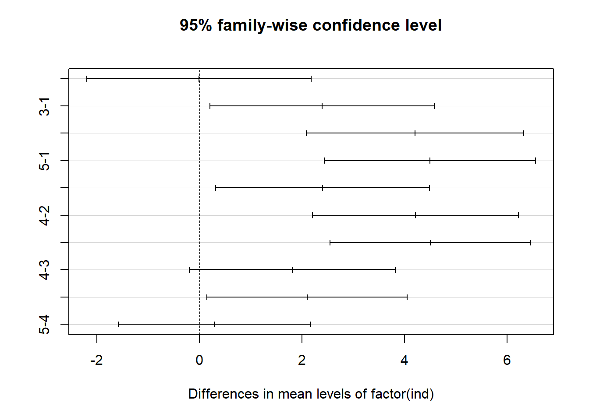
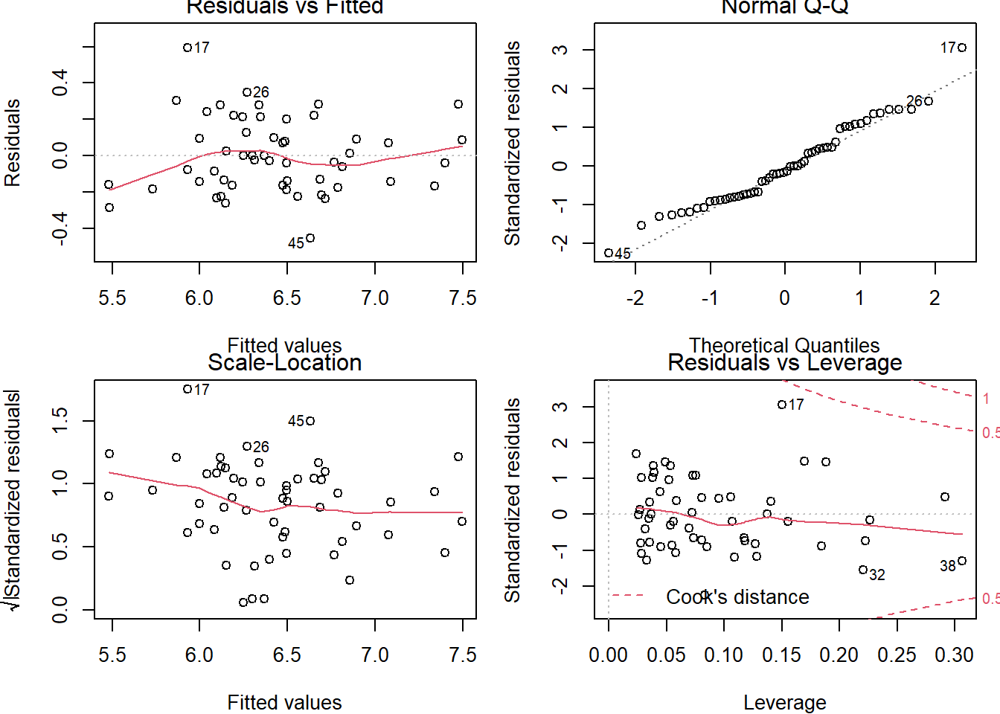

R Code for hypothesis testing
Jeffrey Liang
10/29/2020
Distribution
Binomial
\(P(\mathcal{X}=k)\ = {n \choose k}p^k(1-p)^{n-k}\)
rbinom(5,10,0.3)
## [1] 2 4 1 4 2
qbinom(0.05,10,0.3)
## [1] 1
pbinom(1,10,0.3)
## [1] 0.1493083
dbinom(1,10,0.3)
## [1] 0.1210608Normal Distribution
\(P(\mathcal{X}=k)\ = \frac{1}{\sqrt{2\pi}\sigma}*e^{-\frac{(x-\mu)^2}{2\sigma^2}}\)
rnorm(5)
## [1] 0.0743022 -2.1425683 -0.1755895 0.9596158 0.3820480
qnorm(0.05)
## [1] -1.644854
pnorm(1.96)
## [1] 0.9750021
dnorm(1.96)
## [1] 0.05844094Descriptive Statistics
hide
Table
################################################################
# Biostatistical Methods I #
# Descriptive Statistics #
# Author: Cody Chiuzan #
################################################################
# Library 'arsenal' is used for descriptive statistics tables
# Library 'dplyr' has nice functions for data manipulation, also mutate()
# Library 'ggplot2' is used for graphing
library(arsenal)
library(dplyr)
library(ggplot2)
#########################################################################
# Import Data #
#########################################################################
# Set working directory
low_birth_all <- read.csv(here::here("R_Code/R - Module 2/lowbwt_ALL.csv"))
names(low_birth_all)## [1] "low" "age" "lwt" "race" "smoke" "ht" "ui" "ftv" "ptl"
## [10] "bwt"head(low_birth_all)## low age lwt race smoke ht ui ftv ptl bwt
## 1 0 19 182 black 0 0 1 0 0 2523
## 2 0 33 155 other 0 0 0 1 0 2551
## 3 0 20 105 white 1 0 0 1 0 2557
## 4 0 21 108 white 1 0 1 1 0 2594
## 5 0 18 107 white 1 0 1 0 0 2600
## 6 0 21 124 other 0 0 0 0 0 2622dim(low_birth_all)## [1] 189 10summary(low_birth_all)## low age lwt race
## Min. :0.0000 Min. :14.00 Min. : 80.0 Length:189
## 1st Qu.:0.0000 1st Qu.:19.00 1st Qu.:110.0 Class :character
## Median :0.0000 Median :23.00 Median :121.0 Mode :character
## Mean :0.3122 Mean :23.24 Mean :129.7
## 3rd Qu.:1.0000 3rd Qu.:26.00 3rd Qu.:140.0
## Max. :1.0000 Max. :45.00 Max. :250.0
## smoke ht ui ftv
## Min. :0.0000 Min. :0.00000 Min. :0.0000 Min. :0.0000
## 1st Qu.:0.0000 1st Qu.:0.00000 1st Qu.:0.0000 1st Qu.:0.0000
## Median :0.0000 Median :0.00000 Median :0.0000 Median :0.0000
## Mean :0.3915 Mean :0.06349 Mean :0.1481 Mean :0.4709
## 3rd Qu.:1.0000 3rd Qu.:0.00000 3rd Qu.:0.0000 3rd Qu.:1.0000
## Max. :1.0000 Max. :1.00000 Max. :1.0000 Max. :1.0000
## ptl bwt
## Min. :0.0000 Min. : 709
## 1st Qu.:0.0000 1st Qu.:2414
## Median :0.0000 Median :2977
## Mean :0.1587 Mean :2945
## 3rd Qu.:0.0000 3rd Qu.:3475
## Max. :1.0000 Max. :4990str(low_birth_all)## 'data.frame': 189 obs. of 10 variables:
## $ low : int 0 0 0 0 0 0 0 0 0 0 ...
## $ age : int 19 33 20 21 18 21 22 17 29 26 ...
## $ lwt : int 182 155 105 108 107 124 118 103 123 113 ...
## $ race : chr "black" "other" "white" "white" ...
## $ smoke: int 0 0 1 1 1 0 0 0 1 1 ...
## $ ht : int 0 0 0 0 0 0 0 0 0 0 ...
## $ ui : int 1 0 0 1 1 0 0 0 0 0 ...
## $ ftv : int 0 1 1 1 0 0 1 1 1 0 ...
## $ ptl : int 0 0 0 0 0 0 0 0 0 0 ...
## $ bwt : int 2523 2551 2557 2594 2600 2622 2637 2637 2663 2665 ...# Check for missing values
anyNA(low_birth_all)## [1] FALSEfilter(low_birth_all, is.na(age))## [1] low age lwt race smoke ht ui ftv ptl bwt
## <0 rows> (or 0-length row.names)# Some details about the data: 189 births info were collected at a medical center.
# The dataset contains the following 10 variables:
# low: indicator of birth weight less than 2.5kg
# age: mother's age in years
# lwt: mother's weight in pounds at last menstrual period
# race: mothers race ("white", "black", "other")
# smoke: smoking status during pregnancy (yes/no)
# ht: history of hypertension (yes/no)
# ui: presence of uterine irritability (yes/no)
# ftv: physician visit during the first trimester (yes/no)
# ptl: previous premature labor (yes/no)
# bwt: birth weight in grams
#########################################################################
# Descriptive Statistics: Continuous Variables #
#########################################################################
mean(low_birth_all$age) # Mean## [1] 23.2381median(low_birth_all$age) # Median## [1] 23sd(low_birth_all$age) # Standard Deviation## [1] 5.298678quantile(low_birth_all$age) # Min, 25ht, 50th, 75th, Max## 0% 25% 50% 75% 100%
## 14 19 23 26 45quantile(low_birth_all$age, c(0.10, 0.30, 0.60)) # Tertiles## 10% 30% 60%
## 17 20 24# A more condensed way to obtain summary statistics
summary(low_birth_all$age)## Min. 1st Qu. Median Mean 3rd Qu. Max.
## 14.00 19.00 23.00 23.24 26.00 45.00# Summary statistics for each level of another categorical variable
mean <- tapply(low_birth_all$bwt, low_birth_all$race, mean)
sd <- tapply(low_birth_all$bwt, low_birth_all$race, sd)
med <- tapply(low_birth_all$bwt, low_birth_all$race, median)
min <- tapply(low_birth_all$bwt, low_birth_all$race, min)
max <- tapply(low_birth_all$bwt, low_birth_all$race, max)
cbind(mean, sd, med, min, max)## mean sd med min max
## black 2719.692 638.6839 2849 1135 3860
## other 2804.015 721.3011 2835 709 4054
## white 3103.740 727.7242 3076 1021 4990# Use function tableby() from library 'arsenal' to create a summary table (called Table 1 in publications)
# Use continuous and categorical variables
# First table - not ideal
tab1 <- tableby(~ age + bwt + smoke, data = low_birth_all)
summary(tab1)##
##
## | | Overall (N=189) |
## |:---------------------------|:------------------:|
## |**age** | |
## | Mean (SD) | 23.238 (5.299) |
## | Range | 14.000 - 45.000 |
## |**bwt** | |
## | Mean (SD) | 2944.656 (729.022) |
## | Range | 709.000 - 4990.000 |
## |**smoke** | |
## | Mean (SD) | 0.392 (0.489) |
## | Range | 0.000 - 1.000 |# Change variable names/labels
my_labels <-
list(
age = "Age(yrs)",
bwt = "Birthweight(g)",
smoke = "Smoker",
race = "Race"
)
# Clean the output
my_controls <- tableby.control(
total = T,
test = F,
# No test p-values yet
numeric.stats = c("meansd", "medianq1q3", "range", "Nmiss2"),
cat.stats = c("countpct", "Nmiss2"),
stats.labels = list(
meansd = "Mean (SD)",
medianq1q3 = "Median (Q1, Q3)",
range = "Min - Max",
Nmiss2 = "Missing",
countpct = "N (%)"
)
)
# Make 'smoke' a factor to show N (%)
birth_df <- low_birth_all %>%
mutate(smoke = factor(smoke, labels = c("No", "Yes"))) # Start labeling with 0 (increasing order)
# Second table
tab2 <-
tableby(~ age + bwt + smoke, data = birth_df, control = my_controls)
summary(tab2,
title = "Descriptive Statistics: Lowbirth Data",
labelTranslations = my_labels,
text = T)##
## Table: Descriptive Statistics: Lowbirth Data
##
## | | Overall (N=189) |
## |:------------------|:-----------------------------:|
## |Age(yrs) | |
## |- Mean (SD) | 23.238 (5.299) |
## |- Median (Q1, Q3) | 23.000 (19.000, 26.000) |
## |- Min - Max | 14.000 - 45.000 |
## |- Missing | 0 |
## |Birthweight(g) | |
## |- Mean (SD) | 2944.656 (729.022) |
## |- Median (Q1, Q3) | 2977.000 (2414.000, 3475.000) |
## |- Min - Max | 709.000 - 4990.000 |
## |- Missing | 0 |
## |Smoker | |
## |- No | 115 (60.8%) |
## |- Yes | 74 (39.2%) |
## |- Missing | 0 |# Tabulation by race categories
tab3 <-
tableby(race ~ age + bwt + smoke, data = birth_df, control = my_controls)
summary(tab3,
title = "Descriptive Statistics: Lowbirth Data",
labelTranslations = my_labels,
text = T)##
## Table: Descriptive Statistics: Lowbirth Data
##
## | | black (N=26) | other (N=67) | white (N=96) | Total (N=189) |
## |:------------------|:-----------------------------:|:-----------------------------:|:-----------------------------:|:-----------------------------:|
## |Age(yrs) | | | | |
## |- Mean (SD) | 21.538 (5.109) | 22.388 (4.536) | 24.292 (5.655) | 23.238 (5.299) |
## |- Median (Q1, Q3) | 20.500 (17.250, 24.000) | 22.000 (19.000, 25.000) | 23.500 (20.000, 29.000) | 23.000 (19.000, 26.000) |
## |- Min - Max | 15.000 - 35.000 | 14.000 - 33.000 | 14.000 - 45.000 | 14.000 - 45.000 |
## |- Missing | 0 | 0 | 0 | 0 |
## |Birthweight(g) | | | | |
## |- Mean (SD) | 2719.692 (638.684) | 2804.015 (721.301) | 3103.740 (727.724) | 2944.656 (729.022) |
## |- Median (Q1, Q3) | 2849.000 (2370.500, 3057.000) | 2835.000 (2313.000, 3274.000) | 3076.000 (2584.750, 3651.000) | 2977.000 (2414.000, 3475.000) |
## |- Min - Max | 1135.000 - 3860.000 | 709.000 - 4054.000 | 1021.000 - 4990.000 | 709.000 - 4990.000 |
## |- Missing | 0 | 0 | 0 | 0 |
## |Smoker | | | | |
## |- No | 16 (61.5%) | 55 (82.1%) | 44 (45.8%) | 115 (60.8%) |
## |- Yes | 10 (38.5%) | 12 (17.9%) | 52 (54.2%) | 74 (39.2%) |
## |- Missing | 0 | 0 | 0 | 0 |#########################################################################
# Descriptive Statistics: Categorical Variables #
#########################################################################
tbl <-
table(low_birth_all$smoke, low_birth_all$race) # Two-way table
tbl##
## black other white
## 0 16 55 44
## 1 10 12 52prop.table(tbl, 1) # Row proportions##
## black other white
## 0 0.1391304 0.4782609 0.3826087
## 1 0.1351351 0.1621622 0.7027027prop.table(tbl, 2) # Column proportions##
## black other white
## 0 0.6153846 0.8208955 0.4583333
## 1 0.3846154 0.1791045 0.5416667# 3-way cross-tabulation
xtabs( ~ race + smoke + ht, data = low_birth_all)## , , ht = 0
##
## smoke
## race 0 1
## black 14 9
## other 51 12
## white 43 48
##
## , , ht = 1
##
## smoke
## race 0 1
## black 2 1
## other 4 0
## white 1 4T-Test
hide
One Group
################################################################
# Biostatistical Methods I #
# Statistical Inference: One-Sample Mean #
# Author: Cody Chiuzan #
################################################################
############################################################
# Sample mean distributions: CLT #
############################################################
# Draw 1000 samples of size 10 from an underlying exponential distribution with parameter lambda=0.3
# Calculate their means/var and draw a histogram to vizualize the sample means distribution
set.seed(2)
sample_means_exp1 = rep(NA, 1000)
for (i in 1:1000) {
sample_means_exp1[i] = mean(rexp(10, 0.3))
}
# sample_means_exp
# Calculate the means and the variances of all samples
mean(sample_means_exp1) # compare to true Mean = 1/lambda## [1] 3.360129var(sample_means_exp1) # compare to true Var=1/lambda^2## [1] 1.261384#Histogram
hist(sample_means_exp1,
main = "Samples of Size N=10 from Exp(0.3)",
xlab = "Sample Means",
prob = T)
lines(density(sample_means_exp1), col = "darkblue", lwd = 2)# Draw 1000 samples of size 50 from an underlying exponential distribution with parameter lambda=0.3
# Calculate their means/var and draw a histogram to vizualize the sample means distribution
set.seed(2)
sample_means_exp2 = rep(NA, 1000)
for (i in 1:1000) {
sample_means_exp2[i] = mean(rexp(50, 0.3))
}
# Calculate the means and the variances of all samples
mean(sample_means_exp2) # compare to true Mean = 1/lambda## [1] 3.330665var(sample_means_exp2) # compare to true Var=1/lambda^2## [1] 0.2316242#Histogram
hist(sample_means_exp2,
main = "Samples of Size N=50 from Exp(0.3)",
xlab = "Sample Means",
prob = T)
lines(density(sample_means_exp2), col = "darkblue", lwd = 2)
# Construct a 95% CI for the population mean with n=10, X_bar=175, and known sigma=15
# Sigma represents the pooulation standard deviation
# 1-(alpha/2)=1-(0.05/2)=0.975
LCLz95 <- 175 - qnorm(0.975) * 15 / sqrt(10)
UCLz95 <- 175 + qnorm(0.975) * 15 / sqrt(10)
CLz95 <- c(LCLz95, UCLz95)
CLz95## [1] 165.7031 184.2969# What if we want a 99% CI?
LCLz99 <- 175 - qnorm(0.995) * 15 / sqrt(10)
UCLz99 <- 175 + qnorm(0.995) * 15 / sqrt(10)
CLz99 <- c(LCLz99, UCLz99)
CLz99## [1] 162.7818 187.2182# Construct a 95% CI for the population mean with n=10 => df=10-1=9, X_bar=175, and known s=15
# s represents the sample standard deviation
LCLt95 <- 175 - qt(0.975, df = 9) * 15 / sqrt(10)
UCLt95 <- 175 + qt(0.975, df = 9) * 15 / sqrt(10)
CLt95 <- c(LCLt95, UCLt95)
CLt95## [1] 164.2696 185.7304# Construct a 95% CI for the population variance with known s=15
# s represents the sample standard deviation
LCL_var95 <- 9 * (15 ^ 2) / qchisq(0.975, 9)
UCL_var95 <- 9 * (15 ^ 2) / qchisq(0.025, 9)
CL_var95 <- c(LCL_var95, UCL_var95)
CL_var95## [1] 106.4514 749.8918# Hypothesis Test: Infarct size example
# Test if the mean infract size is different from 25
# X_bar=16, s=10, N=40
t_stats <- (16 - 25) / (10 / sqrt(40))
t_stats## [1] -5.6921# Compare the test statistics with the critical value, alpha=0.05
qt(0.975, 39) # 2.02## [1] 2.022691# Compute the p-value: t_stats<0, so the p-value is twice area to the left of a t distr. with 39 df
p.val <- 2 * pt(t_stats, 39) # p.val<.0001, reject H0.
# Remember the low_birth data
low_birth_all <-
read.csv(here::here("R_Code/R - Module 2/lowbwt_ALL.csv"))
# Let's test if the true mean is different than 3000g
# One-sample t-test, two-tailed
t.test(low_birth_all$bwt, alternative = 'two.sided', mu = 3000)##
## One Sample t-test
##
## data: low_birth_all$bwt
## t = -1.0437, df = 188, p-value = 0.298
## alternative hypothesis: true mean is not equal to 3000
## 95 percent confidence interval:
## 2840.049 3049.264
## sample estimates:
## mean of x
## 2944.656# Output from R
# One Sample t-test
# t = -1.0437, df = 188, p-value = 0.298 ----> Fail to reject H0.
# alternative hypothesis: true mean is not equal to 3000
# 95 percent confidence interval: 2840.049 3049.264
# sample estimates: mean of x is 2944.656
# Let's test if the true mean is less than 3000g
# One-sample t-test, one-tailed
t.test(low_birth_all$bwt, alternative = 'less', mu = 3000)##
## One Sample t-test
##
## data: low_birth_all$bwt
## t = -1.0437, df = 188, p-value = 0.149
## alternative hypothesis: true mean is less than 3000
## 95 percent confidence interval:
## -Inf 3032.312
## sample estimates:
## mean of x
## 2944.656# Output from R
# t = -1.0437, df = 188, p-value = 0.149 ----> Fail to reject H0.
# alternative hypothesis: true mean is less than 3000
# 95 percent confidence interval: -Inf 3032.312 (One-sided confidence interval)
# sample estimates: mean of x is 2944.656 Two Group
################################################################
# Biostatistical Methods I #
# Statistical Inference: Two-Sample Means #
# Author: Cody Chiuzan; Date: Sept 23, 2019 #
################################################################
###########################################################################
# Conduct a two-sample paired t-test to assess the effect of a new diet #
###########################################################################
weight_before <- c(201, 231, 221, 260, 228, 237, 326, 235, 240, 267, 284, 201)
weight_after <- c(200, 236, 216, 233, 224, 216, 296, 195, 207, 247, 210, 209)
weight_diff <- weight_after - weight_before
sd_diff <- sd(weight_diff)
test_weight <- mean(weight_diff) / (sd_diff / sqrt(length(weight_diff)))
# Use the t.test() built-in function
# What alternative are you testing?
t.test(weight_after,
weight_before,
paired = T,
alternative = "less")##
## Paired t-test
##
## data: weight_after and weight_before
## t = -3.0201, df = 11, p-value = 0.005827
## alternative hypothesis: true difference in means is less than 0
## 95 percent confidence interval:
## -Inf -8.174729
## sample estimates:
## mean of the differences
## -20.16667# R output
# data: weight_after and weight_before
# t = -3.0201, df = 11, p-value = 0.005827
# alternative hypothesis: true difference in means is less than 0
# 95 percent confidence interval: -Inf -8.174729
# sample estimates: mean of the differences -20.16667
# Reject the null and conclude that the mean LDL levels are significantly lower after the diet.
###########################################################################################################
# Conduct a two-sample independent t-test to assess the differences in BMD b/w the OC and non-OC groups #
###########################################################################################################
# Oral contraceptive example
# Testing equality of variances for two independent samples
# drawn from two underlying normal distributions.
# Sample 1: s1=0.16, n1=10, x1_bar=1.08
# Sample 2: s2=0.14, n2=10, x2_bar=1.00
F_test <- 0.16 ^ 2 / 0.14 ^ 2
F_crit <- qf(.975, df1 = 9, df2 = 9)
# Compare the F statistic (F_test) to the critical value
# Fcrit: F with 9 dfs in numerator and 9 dfs in denominator
# Because F_test < F_crit, we fail to reject and conclude
# that the pop. variances are not significantly different.
# Use two-sample t-test with equal variances.
std_pooled <- sqrt(((0.16 ^ 2 * 9) + (0.14 ^ 2 * 9)) / 18)
t_stats <- (1.08 - 1.00) / (std_pooled * sqrt((1 / 10) + (1 / 10)))
# Compare t_stats to the critical value: t with 18 df
qt(0.975, 18) # 2.10## [1] 2.100922# t-stats=1.19 < 2.10, fail to reject the null and conclude that
# there is not a sig difference between the mean BMD levels of the two groups.
# 95% CI is your practice!
################################################################
# Two-Sample independent t-test #
################################################################
# Effect of caffeine on muscle metabolism.
# 15 men were randomly selected to take a capsule containing pure caffeine one hour before the test.
# The other group of 20 men received a placebo capsule.
# During each exercise the subject's respiratory exchange ratio (RER) was measured.
# The question of interest to the experimenter was whether, on average, caffeine consumption has an effect on RER.
# The two samples came from two underlying normal distributions: N(94.2,5.6), N(105.5,8.1) and are independent.
# Ideally, you should generate data using past info (here I made it up).
set.seed(6)
caff <- rnorm(15, 94.2, 5.6)
placebo <- rnorm(20, 105.5, 8.1)
# Test equality of variances: use R function var.test()
var.test(placebo, caff, alternative = "two.sided")##
## F test to compare two variances
##
## data: placebo and caff
## F = 3.5768, num df = 19, denom df = 14, p-value = 0.01881
## alternative hypothesis: true ratio of variances is not equal to 1
## 95 percent confidence interval:
## 1.250308 9.467490
## sample estimates:
## ratio of variances
## 3.576784#F = 3.5768, num df = 19, denom df = 14, p-value = 0.01881 # Reject the null, evidence that variances are not equal.
res <-
t.test(caff, placebo, var.equal = FALSE, paired = FALSE) # var.equal=FALSE is the default, so no need to specifically write it.
res##
## Welch Two Sample t-test
##
## data: caff and placebo
## t = -4.5834, df = 30.125, p-value = 7.472e-05
## alternative hypothesis: true difference in means is not equal to 0
## 95 percent confidence interval:
## -17.639668 -6.766628
## sample estimates:
## mean of x mean of y
## 94.68082 106.88397# Look at the complete list of results.
names(res)## [1] "statistic" "parameter" "p.value" "conf.int" "estimate"
## [6] "null.value" "stderr" "alternative" "method" "data.name"# t = -4.5834, df = 30.125, p-value = 7.472e-05 # Reject the null and conclude that the means RER are sig diff b/w the two groups.
# 95% CI of the difference: (-17.639668,-6.766628) # We could safely say that the mean RER is sig. lower in the caffeine group (Why?)Multigroup Camparison
hide
ANOVA
################################################################
# Biostatistical Methods I #
# One-Way Analysis of Variance (ANOVA) #
# Author: Cody Chiuzan #
################################################################
################################################################
# A study is examining the effect of glucose on insulin release.
# Specimens of pancreatic tissue from experimental animals were
# treated with five different stimulants and the insulin levels were recorded.
# Use an ANOVA test to compare the mean insulin levels across the five groups.
################################################################
ins1 <- c(1.53, 1.61, 3.75, 2.89, 3.26)
ins2 <- c(3.15, 3.96, 3.59, 1.89, 1.45, 1.56)
ins3 <- c(3.89, 3.68, 5.70, 5.62, 5.79, 5.33)
ins4 <- c(8.18, 5.64, 7.36, 5.33, 8.82, 5.26, 7.10)
ins5 <- c(5.86, 5.46, 5.69, 6.49, 7.81, 9.03, 7.49, 8.98)
# Re-shape the data
insulin <- c(ins1, ins2, ins3, ins4, ins5)
ind <-
c(rep(1, length(ins1)),
rep(2, length(ins2)),
rep(3, length(ins3)),
rep(4, length(ins4)),
rep(5, length(ins5)))
new_data <- as.data.frame(cbind(insulin, ind))
head(new_data)## insulin ind
## 1 1.53 1
## 2 1.61 1
## 3 3.75 1
## 4 2.89 1
## 5 3.26 1
## 6 3.15 2# Summarize the data
tmp_functn <-
function(x)
c(
sum = sum(x),
mean = mean(x),
var = var(x),
n = length(x)
)
tapply(insulin, ind, tmp_functn)## $`1`
## sum mean var n
## 13.04000 2.60800 0.99172 5.00000
##
## $`2`
## sum mean var n
## 15.60000 2.60000 1.20808 6.00000
##
## $`3`
## sum mean var n
## 30.0100000 5.0016667 0.9163767 6.0000000
##
## $`4`
## sum mean var n
## 47.690000 6.812857 2.044224 7.000000
##
## $`5`
## sum mean var n
## 56.810000 7.101250 2.071841 8.000000# Create box-plots
boxplot(
insulin ~ ind,
data = new_data,
main = "Effect of glucose on insulin release",
xlab = "Experimental Group",
ylab = "Insulin levels"
)
# Perform an ANOVA test: are the mean insulin levels significantly different?
# Need to mention the independent variable as a factor; o/w will be considered continuous
# Function lm() is broader, including linear regression models
res <- lm(insulin ~ factor(ind), data = new_data)
# Coefficients of the ANOVA model with 'grand mean' and alpha effects.
# Will use them later in regression.
res##
## Call:
## lm(formula = insulin ~ factor(ind), data = new_data)
##
## Coefficients:
## (Intercept) factor(ind)2 factor(ind)3 factor(ind)4 factor(ind)5
## 2.608 -0.008 2.394 4.205 4.493# Our regular ANOVA table with SS, Mean SS and F-test
anova(res)## Analysis of Variance Table
##
## Response: insulin
## Df Sum Sq Mean Sq F value Pr(>F)
## factor(ind) 4 121.185 30.2964 19.779 1.046e-07 ***
## Residuals 27 41.357 1.5318
## ---
## Signif. codes: 0 '***' 0.001 '**' 0.01 '*' 0.05 '.' 0.1 ' ' 1# Another option using aov();
# Save the anova object to use later for multiple comparisons
res1 <- aov(insulin ~ factor(ind), data = new_data)
summary(res1)## Df Sum Sq Mean Sq F value Pr(>F)
## factor(ind) 4 121.19 30.296 19.78 1.05e-07 ***
## Residuals 27 41.36 1.532
## ---
## Signif. codes: 0 '***' 0.001 '**' 0.01 '*' 0.05 '.' 0.1 ' ' 1Between Groups Comparison
library(multcomp)# Multiple comparisons adjustments: includes Bonferroni, Holm, Benjamini-Hochberg
pairwise.t.test(new_data$insulin, new_data$ind, p.adj = 'bonferroni')##
## Pairwise comparisons using t tests with pooled SD
##
## data: new_data$insulin and new_data$ind
##
## 1 2 3 4
## 2 1.000 - - -
## 3 0.036 0.023 - -
## 4 3.6e-05 1.5e-05 0.139 -
## 5 8.1e-06 3.1e-06 0.041 1.000
##
## P value adjustment method: bonferroni# For Tukey, we need to use another function with an object created by aov()
Tukey_comp <- TukeyHSD(res1)
Tukey_comp## Tukey multiple comparisons of means
## 95% family-wise confidence level
##
## Fit: aov(formula = insulin ~ factor(ind), data = new_data)
##
## $`factor(ind)`
## diff lwr upr p adj
## 2-1 -0.0080000 -2.1968435 2.180844 1.0000000
## 3-1 2.3936667 0.2048232 4.582510 0.0269106
## 4-1 4.2048571 2.0882727 6.321442 0.0000330
## 5-1 4.4932500 2.4325220 6.553978 0.0000076
## 3-2 2.4016667 0.3146863 4.488647 0.0181513
## 4-2 4.2128571 2.2017925 6.223922 0.0000145
## 5-2 4.5012500 2.5490586 6.453441 0.0000030
## 4-3 1.8111905 -0.1998742 3.822255 0.0927137
## 5-3 2.0995833 0.1473919 4.051775 0.0304080
## 5-4 0.2883929 -1.5824211 2.159207 0.9910177plot(Tukey_comp)
# Dunnett's test: multiple comparisons with a specified control (here group #1)
summary(glht(res1), linfct = mcp(Group = "Dunnett"))## Warning in chkdots(...): Argument(s) 'linfct' passed to '...' are ignored##
## Simultaneous Tests for General Linear Hypotheses
##
## Fit: aov(formula = insulin ~ factor(ind), data = new_data)
##
## Linear Hypotheses:
## Estimate Std. Error t value Pr(>|t|)
## (Intercept) == 0 2.6080 0.5535 4.712 <0.001 ***
## factor(ind)2 == 0 -0.0080 0.7494 -0.011 1.000
## factor(ind)3 == 0 2.3937 0.7494 3.194 0.013 *
## factor(ind)4 == 0 4.2049 0.7247 5.802 <0.001 ***
## factor(ind)5 == 0 4.4932 0.7056 6.368 <0.001 ***
## ---
## Signif. codes: 0 '***' 0.001 '**' 0.01 '*' 0.05 '.' 0.1 ' ' 1
## (Adjusted p values reported -- single-step method)Proportion
hide
Normal Approximate Binomial
################################################################
# Biostatistical Methods I #
# Inferences for One-Sample Proportions #
# Author: Cody Chiuzan #
################################################################
# Normal Approximation: Observe the shape of different Binomial distributions with varying n and p.
#1
par(mfrow = c(1, 2))
plot(
0:50,
dbinom(0:50, 10, 0.5),
type = 'h',
ylim = c(0, 0.50),
xlab = 'X',
main = 'Bin(10,0.5)',
ylab = 'P(X)',
lwd = 3,
cex.lab = 1.5,
cex.axis = 2,
cex.main = 2
)
plot(
0:50,
dbinom(0:50, 30, 0.5),
type = 'h',
ylim = c(0, 0.50),
xlab = 'X',
main = 'Bin(30,0.5)',
ylab = 'P(X)',
lwd = 3,
cex.lab = 1.5,
cex.axis = 2,
cex.main = 2
)#2
par(mfrow = c(1, 2))
plot(
0:50,
dbinom(0:50, 10, 0.10),
type = 'h',
ylim = c(0, 0.50),
xlab = 'X',
main = 'Bin(10,0.1)',
ylab = 'P(X)',
lwd = 3,
cex.lab = 1.5,
cex.axis = 2,
cex.main = 2
)
plot(
0:50,
dbinom(0:50, 50, 0.10),
type = 'h',
ylim = c(0, 0.50),
xlab = 'X',
main = 'Bin(50,0.1)',
ylab = 'P(X)',
lwd = 3,
cex.lab = 1.5,
cex.axis = 2,
cex.main = 2
)
#3
par(mfrow = c(1, 2))
plot(
0:50,
dbinom(0:50, 10, 0.02),
type = 'h',
ylim = c(0, 0.8),
xlab = 'X',
main = 'Bin(10,0.02)',
ylab = 'P(X)',
lwd = 3,
cex.lab = 1.5,
cex.axis = 2,
cex.main = 2
)
plot(
0:50,
dbinom(0:50, 50, 0.02),
type = 'h',
ylim = c(0, 0.8),
xlab = 'X',
main = 'Bin(50,0.02)',
ylab = 'P(X)',
lwd = 3,
cex.lab = 1.5,
cex.axis = 2,
cex.main = 2
)
#4
par(mfrow = c(1, 2))
plot(
0:50,
dbinom(0:50, 10, 0.95),
type = 'h',
ylim = c(0, 0.8),
xlab = 'X',
main = 'Bin(10,0.95)',
ylab = 'P(X)',
lwd = 3,
cex.lab = 1.5,
cex.axis = 2,
cex.main = 2
)
plot(
0:50,
dbinom(0:50, 50, 0.95),
type = 'h',
ylim = c(0, 0.8),
xlab = 'X',
main = 'Bin(50,0.95)',
ylab = 'P(X)',
lwd = 3,
cex.lab = 1.5,
cex.axis = 2,
cex.main = 2
)################################################################
# In a survey of 300 randomly selected drivers, 125 claimed that
# they regularly wear seat belts. Can we conclude from these data
# that the population proportion who regularly wear seat belts is 0.50?
# Perform a hypothesis test and
# Construct a 95% confidence interval for the true population proportion.
################################################################
# p_hat=125/300
# p0=0.50
# Prop.test performs a chi-squared test and not a z-test.
prop.test(125, 300, p = 0.5)##
## 1-sample proportions test with continuity correction
##
## data: 125 out of 300, null probability 0.5
## X-squared = 8.0033, df = 1, p-value = 0.004669
## alternative hypothesis: true p is not equal to 0.5
## 95 percent confidence interval:
## 0.3606621 0.4748409
## sample estimates:
## p
## 0.4166667# Create your own function to perform a one-sample proportion test
# and create a 100(1-alpha) CI using the Normal Approximation
one.proptest_norm <-
function(x,
n,
p = NULL,
conf.level = 0.95,
alternative = "less") {
# x the number of 'cases' in the sample
# n the total sample size
# p is the hypothesized value
z.stat <- NULL
cint <- NULL
p.val <- NULL
phat <- x / n
qhat <- 1 - phat
if (length(p) > 0) {
q <- 1 - p
SE.phat <- sqrt((p * q) / n)
z.stat <- (phat - p) / SE.phat
p.val <- pnorm(z.stat)
if (alternative == "two.sided") {
p.val <- p.val * 2
}
if (alternative == "greater") {
p.val <- 1 - p.val
}
} else {
# Construct a confidence interval
SE.phat <- sqrt((phat * qhat) / n)
}
cint <-
phat + c(-1 * ((qnorm(((1 - conf.level) / 2
) + conf.level)) * SE.phat),
((qnorm(((1 - conf.level) / 2
) + conf.level)) * SE.phat))
return(list(
estimate = phat,
z.stat = z.stat,
p.val = p.val,
cint = cint
))
}
# In our example:
one.proptest_norm(125, 300, 0.5, alternative = "two.sided")## $estimate
## [1] 0.4166667
##
## $z.stat
## [1] -2.886751
##
## $p.val
## [1] 0.003892417
##
## $cint
## [1] 0.3600874 0.4732460# P-hat estimate
#0.417
# Z-statistic: z.stat
# -2.886
#$p.val
#0.004
# 95 % CI: (0.360, 0.473)
####################################################################
# Perform an Exact test, no normal approximation #
# This function uses Clopper-Pearson method #
####################################################################
binom.test(125,
300,
p = 0.5,
alternative = "two.sided",
conf.level = 0.95)##
## Exact binomial test
##
## data: 125 and 300
## number of successes = 125, number of trials = 300, p-value = 0.004589
## alternative hypothesis: true probability of success is not equal to 0.5
## 95 percent confidence interval:
## 0.3602804 0.4747154
## sample estimates:
## probability of success
## 0.4166667# 95% Exact CI: (0.360, 0.474)
# Exact p-value: 0.004Contingency Table Method
#################################################################
# Biostatistical Methods I #
# Contingency Tables: Tests for Categorical Data #
# Author: Cody Chiuzan #
#################################################################
################################################################
# Chi-Squared Test #
################################################################
# Marijuana usage among colleg students
# Chi-squared test for homogeneity
drug_data <-
matrix(
c(57, 50, 43, 57, 58, 20, 56, 45, 24, 45, 22, 33),
nrow = 4,
ncol = 3,
byrow = T,
dimnames = list(
c("freshman", "sophomore", "junior", "senior"),
c("experimental", "casual", "modheavy")
)
)
drug_data## experimental casual modheavy
## freshman 57 50 43
## sophomore 57 58 20
## junior 56 45 24
## senior 45 22 33chisq.test(drug_data)##
## Pearson's Chi-squared test
##
## data: drug_data
## X-squared = 19.369, df = 6, p-value = 0.003584# X-squared = 19.369, df = 6, p-value = 0.003584
# Critical value: qchisq(0.95,6) = 12.59
# We reject the null hypothesis and conclude that the proportions of marijuana usage are different among classes
###
# Association b/w pelvic inflammatory disease and ectopic pregnancy
# Chi-squared test for independence
preg_data <- matrix(
c(28, 6, 251, 273),
nrow = 2,
ncol = 2,
byrow = T,
dimnames = list(c("PID", "No PID"),
c("Ect Preg", "No Ect Preg"))
)
preg_data## Ect Preg No Ect Preg
## PID 28 6
## No PID 251 273chisq.test(preg_data)##
## Pearson's Chi-squared test with Yates' continuity correction
##
## data: preg_data
## X-squared = 13.812, df = 1, p-value = 0.000202# Get the expected values: chisq.test(preg_data)$expected
# X-squared with Yates' correction
# X-squared=13.81, df=1, p-value=0.0002
# Critical value: qchisq(0.95,1) = 3.84
# We reject the null and conclude that there is sufficient evidence that PID and ectopic pregnancy are associated.
###
# What if we have raw data? How do we perform a chi-squared test?
# Use R data 'quine' (library MASS) to compare gender distribution between ethnicities.
library(MASS)
data(quine)
names(quine)## [1] "Eth" "Sex" "Age" "Lrn" "Days"# Create a 2x2 table
table(quine$Sex, quine$Eth)##
## A N
## F 38 42
## M 31 35# Compute row percentages
prop.table(table(quine$Sex, quine$Eth), 1)##
## A N
## F 0.475000 0.525000
## M 0.469697 0.530303# Chi-squared without continuity correction.
chisq.test(table(quine$Sex, quine$Eth), correct = F)##
## Pearson's Chi-squared test
##
## data: table(quine$Sex, quine$Eth)
## X-squared = 0.0040803, df = 1, p-value = 0.9491# X-squared = 0.004, df = 1, p-value = 0.949. Not a significant difference.
# Chi-squared with continuity correction.
chisq.test(table(quine$Sex, quine$Eth), correct = T)##
## Pearson's Chi-squared test with Yates' continuity correction
##
## data: table(quine$Sex, quine$Eth)
## X-squared = 0, df = 1, p-value = 1# X-squared ~ 0, df = 1, p-value = 1. Not a significant difference.
#################################################################
# Biostatistical Methods I #
# Contingency Tables: Tests for Categorical Data #
# Author: Cody Chiuzan #
#################################################################
###############################################################
# Fisher's Exact test for small cell counts (Eij < 5) #
###############################################################
# Tea-time experiment
# One-tailed test: calculations were also made in the lecture notes
tea_exp <- matrix(c(3, 1, 1, 3), nrow = 2)
fisher.test(tea_exp, alternative = "greater")##
## Fisher's Exact Test for Count Data
##
## data: tea_exp
## p-value = 0.2429
## alternative hypothesis: true odds ratio is greater than 1
## 95 percent confidence interval:
## 0.3135693 Inf
## sample estimates:
## odds ratio
## 6.408309# P-val=0.2429, fail to conclude discriminating ability
# Two-sided Fisher test
fisher.test(tea_exp)##
## Fisher's Exact Test for Count Data
##
## data: tea_exp
## p-value = 0.4857
## alternative hypothesis: true odds ratio is not equal to 1
## 95 percent confidence interval:
## 0.2117329 621.9337505
## sample estimates:
## odds ratio
## 6.408309# P-val=0.4857
# CI is for the odds ratio, not difference in proportions
# What if we used a chi-square instead? Not ideal as the exp freq are <5
chisq.test(tea_exp)## Warning in chisq.test(tea_exp): Chi-squared approximation may be incorrect##
## Pearson's Chi-squared test with Yates' continuity correction
##
## data: tea_exp
## X-squared = 0.5, df = 1, p-value = 0.4795# P-val=0.4795
# Notice that the two-sided p-value from Fisher is greater than the one generated by chi-square
# This supports the conclusion that Fisher Exat Test is more conservative (harder to reject)
practice_data <- matrix(c(1, 8, 9, 3), nrow = 2,
dimnames = list(c("diet", "non-diet"), c("men", "women")))
chisq.test(practice_data)## Warning in chisq.test(practice_data): Chi-squared approximation may be incorrect##
## Pearson's Chi-squared test with Yates' continuity correction
##
## data: practice_data
## X-squared = 6.0494, df = 1, p-value = 0.01391# Pearson's Chi-squared test with Yates' continuity correction for 2X2 table
# X-squared = 6.0494, df = 1, p-value = 0.01391
# Warning message:
# In chisq.test(practice_data) : Chi-squared approximation may be incorrect
fisher.test(practice_data)##
## Fisher's Exact Test for Count Data
##
## data: practice_data
## p-value = 0.007519
## alternative hypothesis: true odds ratio is not equal to 1
## 95 percent confidence interval:
## 0.0008560335 0.6145334348
## sample estimates:
## odds ratio
## 0.05080595# Fisher's Exact Test for Count Data
# p-value = 0.007519 # Notice the difference in p-values b/w chi-squared and Fisher
###############################################################
# McNemar Test for binomial matched-pair data #
# Normal approximation #
###############################################################
# Two procedures are tested on the same 75 subjects
# in order to identify the absence/presence of the disease
procedure_data <- matrix(
c(41, 8, 14, 12),
nrow = 2,
byrow = T,
dimnames = list(c("positive", "negative"), c("positive", "negative"))
)
mcnemar.test(procedure_data)##
## McNemar's Chi-squared test with continuity correction
##
## data: procedure_data
## McNemar's chi-squared = 1.1364, df = 1, p-value = 0.2864# McNemar's Chi-squared test with continuity correction
# McNemar's Chi-squared = 1.1364, df = 1, p-value = 0.2864
# What if you performed a chi-squared test instead?
chisq.test(procedure_data)##
## Pearson's Chi-squared test with Yates' continuity correction
##
## data: procedure_data
## X-squared = 6.278, df = 1, p-value = 0.01222# X-squared = 6.278, df = 1, p-value = 0.01222
# Notice that the conclusions would be totally different.Regression
Hide
SLR
################################################################
# Biostatistical Methods I #
# Simple Linear Regression #
################################################################
library(faraway)##
## Attaching package: 'faraway'## The following objects are masked from 'package:survival':
##
## rats, solderlibrary(broom)
library(dplyr)
# Load data diabetes
data(diabetes)
names(diabetes)## [1] "id" "chol" "stab.glu" "hdl" "ratio" "glyhb"
## [7] "location" "age" "gender" "height" "weight" "frame"
## [13] "bp.1s" "bp.1d" "bp.2s" "bp.2d" "waist" "hip"
## [19] "time.ppn"summary(diabetes)## id chol stab.glu hdl
## Min. : 1000 Min. : 78.0 Min. : 48.0 Min. : 12.00
## 1st Qu.: 4792 1st Qu.:179.0 1st Qu.: 81.0 1st Qu.: 38.00
## Median :15766 Median :204.0 Median : 89.0 Median : 46.00
## Mean :15978 Mean :207.8 Mean :106.7 Mean : 50.45
## 3rd Qu.:20336 3rd Qu.:230.0 3rd Qu.:106.0 3rd Qu.: 59.00
## Max. :41756 Max. :443.0 Max. :385.0 Max. :120.00
## NA's :1 NA's :1
## ratio glyhb location age gender
## Min. : 1.500 Min. : 2.68 Buckingham:200 Min. :19.00 male :169
## 1st Qu.: 3.200 1st Qu.: 4.38 Louisa :203 1st Qu.:34.00 female:234
## Median : 4.200 Median : 4.84 Median :45.00
## Mean : 4.522 Mean : 5.59 Mean :46.85
## 3rd Qu.: 5.400 3rd Qu.: 5.60 3rd Qu.:60.00
## Max. :19.300 Max. :16.11 Max. :92.00
## NA's :1 NA's :13
## height weight frame bp.1s bp.1d
## Min. :52.00 Min. : 99.0 small :104 Min. : 90.0 Min. : 48.00
## 1st Qu.:63.00 1st Qu.:151.0 medium:184 1st Qu.:121.2 1st Qu.: 75.00
## Median :66.00 Median :172.5 large :103 Median :136.0 Median : 82.00
## Mean :66.02 Mean :177.6 NA's : 12 Mean :136.9 Mean : 83.32
## 3rd Qu.:69.00 3rd Qu.:200.0 3rd Qu.:146.8 3rd Qu.: 90.00
## Max. :76.00 Max. :325.0 Max. :250.0 Max. :124.00
## NA's :5 NA's :1 NA's :5 NA's :5
## bp.2s bp.2d waist hip
## Min. :110.0 Min. : 60.00 Min. :26.0 Min. :30.00
## 1st Qu.:138.0 1st Qu.: 84.00 1st Qu.:33.0 1st Qu.:39.00
## Median :149.0 Median : 92.00 Median :37.0 Median :42.00
## Mean :152.4 Mean : 92.52 Mean :37.9 Mean :43.04
## 3rd Qu.:161.0 3rd Qu.:100.00 3rd Qu.:41.0 3rd Qu.:46.00
## Max. :238.0 Max. :124.00 Max. :56.0 Max. :64.00
## NA's :262 NA's :262 NA's :2 NA's :2
## time.ppn
## Min. : 5.0
## 1st Qu.: 90.0
## Median : 240.0
## Mean : 341.2
## 3rd Qu.: 517.5
## Max. :1560.0
## NA's :3# Plot (Y) chol vs age (X)
plot(diabetes$age, diabetes$chol)
reg_diab<-lm(diabetes$chol~diabetes$age)
# Summarize regression
summary(reg_diab)##
## Call:
## lm(formula = diabetes$chol ~ diabetes$age)
##
## Residuals:
## Min 1Q Median 3Q Max
## -142.630 -25.225 -5.206 24.238 232.520
##
## Coefficients:
## Estimate Std. Error t value Pr(>|t|)
## (Intercept) 178.1260 6.5638 27.138 < 2e-16 ***
## diabetes$age 0.6344 0.1323 4.794 2.3e-06 ***
## ---
## Signif. codes: 0 '***' 0.001 '**' 0.01 '*' 0.05 '.' 0.1 ' ' 1
##
## Residual standard error: 43.27 on 400 degrees of freedom
## (1 observation deleted due to missingness)
## Multiple R-squared: 0.05434, Adjusted R-squared: 0.05198
## F-statistic: 22.99 on 1 and 400 DF, p-value: 2.304e-06tidy(reg_diab)## # A tibble: 2 x 5
## term estimate std.error statistic p.value
## <chr> <dbl> <dbl> <dbl> <dbl>
## 1 (Intercept) 178. 6.56 27.1 9.90e-93
## 2 diabetes$age 0.634 0.132 4.79 2.30e- 6glance(reg_diab)## # A tibble: 1 x 12
## r.squared adj.r.squared sigma statistic p.value df logLik AIC BIC
## <dbl> <dbl> <dbl> <dbl> <dbl> <dbl> <dbl> <dbl> <dbl>
## 1 0.0543 0.0520 43.3 23.0 2.30e-6 1 -2084. 4174. 4186.
## # ... with 3 more variables: deviance <dbl>, df.residual <int>, nobs <int># Regression objects
names(reg_diab)## [1] "coefficients" "residuals" "effects" "rank"
## [5] "fitted.values" "assign" "qr" "df.residual"
## [9] "na.action" "xlevels" "call" "terms"
## [13] "model"# Get fitted.values
reg_diab$fitted.values## 1 2 3 4 5 6 7 8
## 207.3076 196.5231 214.9203 220.6297 218.7266 199.6950 197.1575 201.5982
## 9 10 11 12 13 14 15 16
## 206.6733 213.0171 216.1890 202.2326 195.2544 203.5013 200.9638 199.0607
## 17 18 19 20 21 22 23 24
## 209.8452 190.8137 200.9638 217.4578 222.5329 207.9420 202.2326 219.9953
## 25 26 27 29 30 31 32 33
## 193.3512 204.1357 201.5982 205.4045 203.5013 204.7701 211.1140 216.8234
## 34 35 36 37 38 39 40 41
## 216.8234 193.9856 207.9420 200.3294 207.3076 214.2859 222.5329 192.0824
## 42 43 44 45 46 47 48 49
## 211.1140 200.9638 205.4045 223.8016 201.5982 212.3827 216.1890 203.5013
## 50 51 52 53 54 55 56 57
## 213.0171 226.3392 205.4045 219.3609 206.6733 222.5329 190.8137 217.4578
## 58 59 60 61 62 63 64 65
## 236.4893 209.2108 206.0389 225.0704 200.9638 210.4796 202.2326 197.7919
## 66 67 68 69 70 71 72 73
## 195.8887 192.0824 223.1672 226.3392 235.8549 203.5013 192.7168 190.8137
## 74 75 76 77 78 79 80 81
## 203.5013 211.1140 226.3392 207.3076 208.5764 192.0824 214.9203 199.6950
## 82 83 84 85 86 87 88 89
## 216.8234 203.5013 195.8887 211.7483 220.6297 210.4796 209.2108 219.3609
## 90 91 92 93 94 95 96 97
## 212.3827 202.2326 218.7266 204.1357 220.6297 195.2544 191.4481 204.1357
## 98 99 100 101 102 103 104 105
## 207.9420 216.8234 219.3609 195.8887 204.1357 201.5982 209.8452 214.2859
## 106 107 108 109 110 111 112 113
## 195.8887 197.7919 230.7798 228.2423 221.2641 198.4263 194.6200 200.9638
## 114 115 116 117 118 119 120 121
## 211.7483 190.1793 218.0922 214.9203 211.7483 209.8452 204.1357 208.5764
## 122 123 124 125 126 127 128 129
## 215.5546 199.6950 218.0922 192.7168 191.4481 192.7168 200.9638 223.1672
## 130 131 132 133 134 135 136 137
## 218.7266 205.4045 197.7919 206.0389 216.1890 205.4045 208.5764 213.6515
## 138 139 140 141 142 143 144 145
## 213.0171 209.2108 214.9203 199.0607 208.5764 219.9953 215.5546 206.6733
## 146 147 148 149 150 151 152 153
## 211.1140 226.3392 200.9638 204.1357 190.8137 209.8452 205.4045 230.1455
## 154 155 156 157 158 159 160 161
## 200.3294 207.9420 225.7048 217.4578 197.7919 209.8452 202.8670 199.0607
## 162 163 164 165 166 167 168 169
## 214.9203 229.5111 195.2544 207.9420 199.0607 220.6297 204.7701 191.4481
## 170 171 172 173 174 175 176 177
## 210.4796 195.2544 210.4796 223.1672 209.8452 212.3827 215.5546 215.5546
## 178 179 180 181 182 183 184 185
## 203.5013 214.9203 223.8016 219.9953 192.7168 204.7701 205.4045 225.7048
## 186 187 188 189 190 191 192 193
## 219.3609 199.6950 201.5982 216.8234 200.9638 206.6733 221.2641 214.2859
## 194 195 196 197 198 199 200 201
## 204.1357 221.2641 203.5013 228.2423 217.4578 218.0922 213.0171 213.0171
## 202 203 204 205 206 207 208 209
## 195.2544 219.9953 218.0922 227.6079 221.2641 197.7919 218.7266 203.5013
## 210 211 212 213 214 215 216 217
## 216.8234 195.8887 199.6950 218.0922 213.0171 194.6200 200.9638 203.5013
## 218 219 220 221 222 223 224 225
## 206.6733 221.2641 230.1455 216.1890 197.1575 204.1357 212.3827 223.8016
## 226 227 228 229 230 231 232 233
## 207.9420 209.8452 210.4796 206.6733 202.2326 190.8137 206.0389 218.0922
## 234 235 236 237 238 239 240 241
## 209.8452 206.0389 208.5764 204.1357 196.5231 226.3392 221.8985 194.6200
## 242 243 244 245 246 247 248 249
## 222.5329 193.9856 204.7701 213.6515 197.7919 197.7919 195.2544 224.4360
## 250 251 252 253 254 255 256 257
## 198.4263 190.1793 223.1672 195.2544 197.7919 190.8137 197.7919 217.4578
## 258 259 260 261 262 263 264 265
## 206.0389 200.9638 200.9638 207.9420 197.1575 218.0922 208.5764 219.3609
## 266 267 268 269 270 271 272 273
## 215.5546 201.5982 227.6079 192.7168 202.2326 202.2326 204.1357 196.5231
## 274 275 276 277 278 279 280 281
## 209.2108 192.7168 196.5231 203.5013 202.2326 203.5013 196.5231 227.6079
## 282 283 284 285 286 287 288 289
## 209.8452 192.7168 216.1890 203.5013 216.1890 203.5013 197.1575 191.4481
## 290 291 292 293 294 295 296 297
## 218.0922 218.0922 205.4045 207.3076 218.7266 213.6515 200.3294 215.5546
## 298 299 300 301 302 303 304 305
## 192.0824 205.4045 194.6200 204.1357 205.4045 190.8137 195.8887 197.1575
## 306 307 308 309 310 311 312 313
## 219.9953 190.8137 198.4263 202.2326 216.8234 194.6200 225.0704 223.8016
## 314 315 316 317 318 319 320 321
## 191.4481 200.9638 204.7701 219.9953 199.6950 205.4045 214.2859 206.6733
## 322 323 324 325 326 327 328 329
## 206.0389 195.2544 218.0922 219.3609 197.1575 195.8887 204.1357 197.7919
## 330 331 332 333 334 335 336 337
## 199.0607 219.9953 195.8887 193.9856 194.6200 203.5013 202.2326 197.1575
## 338 339 340 341 342 343 344 345
## 211.1140 192.0824 210.4796 206.6733 211.7483 191.4481 211.7483 201.5982
## 346 347 348 349 350 351 352 353
## 199.6950 197.1575 225.0704 200.9638 206.6733 200.3294 209.8452 195.2544
## 354 355 356 357 358 359 360 361
## 211.1140 204.7701 202.8670 224.4360 195.8887 211.7483 209.2108 213.0171
## 362 363 364 365 366 367 368 369
## 201.5982 216.1890 213.6515 231.4142 190.8137 228.8767 216.1890 228.8767
## 370 371 372 373 374 375 376 377
## 196.5231 205.4045 218.0922 201.5982 190.8137 206.0389 212.3827 214.9203
## 378 379 380 381 382 383 384 385
## 200.3294 211.1140 216.1890 205.4045 215.5546 199.0607 201.5982 203.5013
## 386 387 388 389 390 391 392 393
## 202.2326 198.4263 216.1890 197.1575 204.7701 211.1140 215.5546 227.6079
## 394 395 396 397 398 399 400 401
## 210.4796 193.9856 201.5982 212.3827 234.5861 211.7483 210.4796 196.5231
## 402 403
## 204.1357 221.2641
## attr(,"label")
## [1] "Total Cholesterol"
## attr(,"class")
## [1] "labelled"# Scatterplot and regression line overlaid
plot(diabetes$age, diabetes$chol)
abline(reg_diab,lwd=2,col=2)# Calculate the regression coefficient estimates 'by hand'.
set.seed(1)
data = data.frame(x = rnorm(30, 3, 3)) %>% mutate(y = 2+.6*x +rnorm(30, 0, 1))
linmod = lm(y~x, data = data)
summary(linmod)##
## Call:
## lm(formula = y ~ x, data = data)
##
## Residuals:
## Min 1Q Median 3Q Max
## -1.5202 -0.5050 -0.2297 0.5753 1.8534
##
## Coefficients:
## Estimate Std. Error t value Pr(>|t|)
## (Intercept) 2.08743 0.22958 9.092 7.53e-10 ***
## x 0.61396 0.05415 11.338 5.61e-12 ***
## ---
## Signif. codes: 0 '***' 0.001 '**' 0.01 '*' 0.05 '.' 0.1 ' ' 1
##
## Residual standard error: 0.8084 on 28 degrees of freedom
## Multiple R-squared: 0.8211, Adjusted R-squared: 0.8148
## F-statistic: 128.6 on 1 and 28 DF, p-value: 5.612e-12beta1 = with(data, sum((x - mean(x))*(y - mean(y))) / sum((x - mean(x))^2))
beta0 = with(data, mean(y) - beta1*mean(x))
c(beta0, beta1)## [1] 2.0874344 0.6139621# Notice the same values
################################################################
# Biostatistical Methods I #
# Simple Linear Regression - Inferences #
################################################################
# Load libraries
library(faraway)
library(broom)
library(dplyr)
# Read data 'Hospitals'
data_hosp<-read.csv(here::here("R_Code","R - Module 17","Hospital.csv"))
names(data_hosp)## [1] "ID" "LOS" "AGE" "INFRISK" "CULT" "XRAY" "BEDS"
## [8] "MEDSCHL" "REGION" "CENSUS" "NURSE" "FACS"# Look at data structure
str(data_hosp)## 'data.frame': 113 obs. of 12 variables:
## $ ID : int 1 2 3 4 5 6 7 8 9 10 ...
## $ LOS : num 7.13 8.82 8.34 8.95 11.2 ...
## $ AGE : num 55.7 58.2 56.9 53.7 56.5 50.9 57.8 45.7 48.2 56.3 ...
## $ INFRISK: num 4.1 1.6 2.7 5.6 5.7 5.1 4.6 5.4 4.3 6.3 ...
## $ CULT : num 9 3.8 8.1 18.9 34.5 21.9 16.7 60.5 24.4 29.6 ...
## $ XRAY : num 39.6 51.7 74 122.8 88.9 ...
## $ BEDS : int 279 80 107 147 180 150 186 640 182 85 ...
## $ MEDSCHL: int 2 2 2 2 2 2 2 1 2 2 ...
## $ REGION : int 4 2 3 4 1 2 3 2 3 1 ...
## $ CENSUS : int 207 51 82 53 134 147 151 399 130 59 ...
## $ NURSE : int 241 52 54 148 151 106 129 360 118 66 ...
## $ FACS : num 60 40 20 40 40 40 40 60 40 40 ...# Scatter plot (Y) vs (X)
# LOS: length of stay(Y)
# BEDS: number of beds(X)
data_hosp %>%
ggplot(aes(BEDS, LOS)) + geom_point(color='blue') + theme_bw(base_size=20) +
labs(x="Number of beds", y="Length of stay (days)")# Simple linear regression
reg_hos<-lm(data_hosp$LOS~data_hosp$BEDS)
# Analyze the regression results
summary(reg_hos)##
## Call:
## lm(formula = data_hosp$LOS ~ data_hosp$BEDS)
##
## Residuals:
## Min 1Q Median 3Q Max
## -2.8291 -1.0028 -0.1302 0.6782 9.6933
##
## Coefficients:
## Estimate Std. Error t value Pr(>|t|)
## (Intercept) 8.6253643 0.2720589 31.704 < 2e-16 ***
## data_hosp$BEDS 0.0040566 0.0008584 4.726 6.77e-06 ***
## ---
## Signif. codes: 0 '***' 0.001 '**' 0.01 '*' 0.05 '.' 0.1 ' ' 1
##
## Residual standard error: 1.752 on 111 degrees of freedom
## Multiple R-squared: 0.1675, Adjusted R-squared: 0.16
## F-statistic: 22.33 on 1 and 111 DF, p-value: 6.765e-06# Get the ANOVA table
anova(reg_hos)## Analysis of Variance Table
##
## Response: data_hosp$LOS
## Df Sum Sq Mean Sq F value Pr(>F)
## data_hosp$BEDS 1 68.54 68.542 22.333 6.765e-06 ***
## Residuals 111 340.67 3.069
## ---
## Signif. codes: 0 '***' 0.001 '**' 0.01 '*' 0.05 '.' 0.1 ' ' 1# Residual st error: MSE=sigma^2
glance(reg_hos)$sigma## [1] 1.75188# Scatter plot with regression line overlaid
data_hosp %>%
ggplot(aes(BEDS, LOS)) + geom_point(color='blue') + theme_bw(base_size=20) +
geom_smooth(method='lm', se=FALSE, color='red') +
labs(x="Number of beds", y="Length of stay (days)")## `geom_smooth()` using formula 'y ~ x'# Scatter plot with regression line overlaid and 95% confidence bands
data_hosp %>%
ggplot(aes(BEDS, LOS)) + geom_point(color='blue') + theme_bw(base_size=20) +
geom_smooth(method='lm', se=TRUE, color='red') +
labs(x="Number of beds", y="Length of stay (days)")## `geom_smooth()` using formula 'y ~ x'
# How do we calculate the 95% CI for the slope?
# Interpretation: 95% CI for the expected/mean difference in LOS for 1 bed differene
# Get the critical t value for alpha=0.05 and n-2 df
qt(0.975,111) # In data hospital, df=n-2=113-2=111## [1] 1.981567coef<-summary(reg_hos)$coefficients[2,1]
err<-summary(reg_hos)$coefficients[2,2]
slope_int<-coef + c(-1,1)*err*qt(0.975, 111)
# CIs for both slope and intercept
confint(reg_hos)## 2.5 % 97.5 %
## (Intercept) 8.086261517 9.164467086
## data_hosp$BEDS 0.002355649 0.005757623confint(reg_hos,level=0.95)## 2.5 % 97.5 %
## (Intercept) 8.086261517 9.164467086
## data_hosp$BEDS 0.002355649 0.005757623# How do we calculate the 95% CI for 100 beds difference?
coef<-summary(reg_hos)$coefficients[2,1]
err<-summary(reg_hos)$coefficients[2,2]
slope_int100<-100*coef + c(-1,1)*(100*err)*qt(0.975, 111)
slope_int100## [1] 0.2355649 0.5757623#############################################################################
# Calculate 95% CIs using predict function
# If 'newdata' is omitted the predictions are based on the data used for the fit, like in the case below.
pred.clim <- predict.lm(reg_hos, interval="confidence")
datapred <- data.frame(cbind(data_hosp$BEDS, data_hosp$LOS, pred.clim))
plot(datapred[,1],datapred[,2],xlab="Number of Beds", ylab="Length of stay (days)")
#abline(reg_hos,lwd=2,col=2)
lines(datapred[,1],datapred[,3], lwd=2)
lines(datapred[,1],datapred[,5], lty=1, col=3, type='l')
lines(datapred[,1],datapred[,4], lty=1, col=3,type='l')
# Calculate 95% PIs for fitted values using predict function
# Compare to prediction intervals: of course that the PIs are wider than CIs
pred.plim <- predict.lm(reg_hos, interval="prediction") ## Warning in predict.lm(reg_hos, interval = "prediction"): predictions on current data refer to _future_ responsesdatapred1 <- data.frame(cbind(data_hosp$BEDS, data_hosp$LOS, pred.plim))
#abline(reg_hos,lwd=2,col=2)
lines(datapred1[,1],datapred1[,3], lwd=2)
lines(datapred1[,1],datapred1[,5], lty=1, col=2, type='l')
lines(datapred1[,1],datapred1[,4], lty=1, col=2,type='l')##############################################################
# Calculate the correlation coefficient between LOS and BEDS
cor(data_hosp$LOS, data_hosp$BEDS)## [1] 0.4092652# Look at the R_squared. How does it compare to the correlation? Same value, but only for SLR.
cor(data_hosp$LOS, data_hosp$BEDS)^2## [1] 0.167498MLR
################################################################
# Biostatistical Methods I #
# Multiple Linear Regression #
################################################################
library(faraway)
library(broom)
library(dplyr)
# Read data 'Hospitals'
data_hosp<-read.csv(here::here("R_Code/R - Module 17/Hospital.csv"))
names(data_hosp)## [1] "ID" "LOS" "AGE" "INFRISK" "CULT" "XRAY" "BEDS"
## [8] "MEDSCHL" "REGION" "CENSUS" "NURSE" "FACS"# Scatter plot with regression line overlaid and 95% confidence bands
data_hosp %>%
ggplot(aes(BEDS, LOS)) + geom_point(color='blue') + theme_bw(base_size=20) +
geom_smooth(method='lm', se=TRUE, color='red') +
labs(x="Number of beds", y="Length of stay (days)")## `geom_smooth()` using formula 'y ~ x'# Simple linear regression: Length of stay (LOS) vs number of BEDS
reg_hos<-lm(data_hosp$LOS~data_hosp$BEDS)
summary(reg_hos)##
## Call:
## lm(formula = data_hosp$LOS ~ data_hosp$BEDS)
##
## Residuals:
## Min 1Q Median 3Q Max
## -2.8291 -1.0028 -0.1302 0.6782 9.6933
##
## Coefficients:
## Estimate Std. Error t value Pr(>|t|)
## (Intercept) 8.6253643 0.2720589 31.704 < 2e-16 ***
## data_hosp$BEDS 0.0040566 0.0008584 4.726 6.77e-06 ***
## ---
## Signif. codes: 0 '***' 0.001 '**' 0.01 '*' 0.05 '.' 0.1 ' ' 1
##
## Residual standard error: 1.752 on 111 degrees of freedom
## Multiple R-squared: 0.1675, Adjusted R-squared: 0.16
## F-statistic: 22.33 on 1 and 111 DF, p-value: 6.765e-06# Get the ANOVA table
anova(reg_hos)## Analysis of Variance Table
##
## Response: data_hosp$LOS
## Df Sum Sq Mean Sq F value Pr(>F)
## data_hosp$BEDS 1 68.54 68.542 22.333 6.765e-06 ***
## Residuals 111 340.67 3.069
## ---
## Signif. codes: 0 '***' 0.001 '**' 0.01 '*' 0.05 '.' 0.1 ' ' 1# Matrix model
model.matrix(reg_hos)## (Intercept) data_hosp$BEDS
## 1 1 279
## 2 1 80
## 3 1 107
## 4 1 147
## 5 1 180
## 6 1 150
## 7 1 186
## 8 1 640
## 9 1 182
## 10 1 85
## 11 1 768
## 12 1 167
## 13 1 322
## 14 1 97
## 15 1 72
## 16 1 387
## 17 1 108
## 18 1 133
## 19 1 134
## 20 1 833
## 21 1 95
## 22 1 195
## 23 1 270
## 24 1 600
## 25 1 298
## 26 1 546
## 27 1 170
## 28 1 176
## 29 1 248
## 30 1 167
## 31 1 318
## 32 1 210
## 33 1 196
## 34 1 312
## 35 1 221
## 36 1 266
## 37 1 90
## 38 1 60
## 39 1 196
## 40 1 73
## 41 1 166
## 42 1 113
## 43 1 130
## 44 1 362
## 45 1 115
## 46 1 831
## 47 1 306
## 48 1 593
## 49 1 106
## 50 1 305
## 51 1 252
## 52 1 620
## 53 1 535
## 54 1 157
## 55 1 76
## 56 1 281
## 57 1 70
## 58 1 318
## 59 1 445
## 60 1 191
## 61 1 119
## 62 1 595
## 63 1 68
## 64 1 83
## 65 1 489
## 66 1 508
## 67 1 265
## 68 1 304
## 69 1 487
## 70 1 97
## 71 1 72
## 72 1 87
## 73 1 298
## 74 1 184
## 75 1 235
## 76 1 76
## 77 1 52
## 78 1 752
## 79 1 237
## 80 1 175
## 81 1 461
## 82 1 195
## 83 1 197
## 84 1 143
## 85 1 92
## 86 1 195
## 87 1 477
## 88 1 353
## 89 1 165
## 90 1 424
## 91 1 100
## 92 1 95
## 93 1 56
## 94 1 99
## 95 1 154
## 96 1 98
## 97 1 246
## 98 1 298
## 99 1 163
## 100 1 568
## 101 1 64
## 102 1 190
## 103 1 92
## 104 1 356
## 105 1 297
## 106 1 130
## 107 1 115
## 108 1 91
## 109 1 571
## 110 1 98
## 111 1 129
## 112 1 835
## 113 1 29
## attr(,"assign")
## [1] 0 1model.matrix(reg_hos) %>% head## (Intercept) data_hosp$BEDS
## 1 1 279
## 2 1 80
## 3 1 107
## 4 1 147
## 5 1 180
## 6 1 150# Multiple linear regression:
# Var 1: Number of BEDS
# Var 2: INFRISK (prob. % of getting an infection during hospitalization)
regmult1_hos<-lm(data_hosp$LOS~data_hosp$BEDS + data_hosp$INFRISK)
# Analyze the regression results
summary(regmult1_hos)##
## Call:
## lm(formula = data_hosp$LOS ~ data_hosp$BEDS + data_hosp$INFRISK)
##
## Residuals:
## Min 1Q Median 3Q Max
## -2.8624 -0.9904 -0.1996 0.6671 8.4219
##
## Coefficients:
## Estimate Std. Error t value Pr(>|t|)
## (Intercept) 6.2703521 0.5038751 12.444 < 2e-16 ***
## data_hosp$BEDS 0.0024747 0.0008236 3.005 0.00329 **
## data_hosp$INFRISK 0.6323812 0.1184476 5.339 5.08e-07 ***
## ---
## Signif. codes: 0 '***' 0.001 '**' 0.01 '*' 0.05 '.' 0.1 ' ' 1
##
## Residual standard error: 1.568 on 110 degrees of freedom
## Multiple R-squared: 0.3388, Adjusted R-squared: 0.3268
## F-statistic: 28.19 on 2 and 110 DF, p-value: 1.31e-10# Multiple linear regression: BEDS and INFRISK and NURSE
regmult2_hos<-lm(data_hosp$LOS~data_hosp$BEDS + data_hosp$INFRISK+data_hosp$NURSE)
summary(regmult2_hos)##
## Call:
## lm(formula = data_hosp$LOS ~ data_hosp$BEDS + data_hosp$INFRISK +
## data_hosp$NURSE)
##
## Residuals:
## Min 1Q Median 3Q Max
## -2.8692 -1.0457 -0.1371 0.9099 8.1339
##
## Coefficients:
## Estimate Std. Error t value Pr(>|t|)
## (Intercept) 6.148286 0.499875 12.300 < 2e-16 ***
## data_hosp$BEDS 0.006007 0.001882 3.192 0.00185 **
## data_hosp$INFRISK 0.674805 0.118463 5.696 1.05e-07 ***
## data_hosp$NURSE -0.005504 0.002645 -2.081 0.03982 *
## ---
## Signif. codes: 0 '***' 0.001 '**' 0.01 '*' 0.05 '.' 0.1 ' ' 1
##
## Residual standard error: 1.545 on 109 degrees of freedom
## Multiple R-squared: 0.3641, Adjusted R-squared: 0.3466
## F-statistic: 20.8 on 3 and 109 DF, p-value: 9.915e-11# Multiple linear regression: BEDS and MEDSCHL (Medical School Affiliation: 1-Yes, 2-No)
# Recode MEDSCHL: Yes:1 and No:0
data_hosp$MS<-ifelse(data_hosp$MEDSCHL==1,1,ifelse(data_hosp$MEDSCHL==2, 0, NA))
# Multiple linear regression: INFRISK and new MS (Medical School Affiliation: 1-Yes, 0-No)
regmult3_hos<-lm(data_hosp$LOS~data_hosp$INFRISK +data_hosp$MS)
summary(regmult3_hos)##
## Call:
## lm(formula = data_hosp$LOS ~ data_hosp$INFRISK + data_hosp$MS)
##
## Residuals:
## Min 1Q Median 3Q Max
## -2.9037 -0.8739 -0.1142 0.5965 8.5568
##
## Coefficients:
## Estimate Std. Error t value Pr(>|t|)
## (Intercept) 6.4547 0.5146 12.542 <2e-16 ***
## data_hosp$INFRISK 0.6998 0.1156 6.054 2e-08 ***
## data_hosp$MS 0.9717 0.4316 2.251 0.0263 *
## ---
## Signif. codes: 0 '***' 0.001 '**' 0.01 '*' 0.05 '.' 0.1 ' ' 1
##
## Residual standard error: 1.595 on 110 degrees of freedom
## Multiple R-squared: 0.3161, Adjusted R-squared: 0.3036
## F-statistic: 25.42 on 2 and 110 DF, p-value: 8.42e-10# Categorical predictor REGION: multiple levels
# Simple linear regression with predictor REGION (1:NE, 2:NC, 3:S, 4:W)
data_hosp %>% lm(LOS~REGION, data=.) %>% summary##
## Call:
## lm(formula = LOS ~ REGION, data = .)
##
## Residuals:
## Min 1Q Median 3Q Max
## -2.8883 -1.0283 -0.1464 0.7317 8.6417
##
## Coefficients:
## Estimate Std. Error t value Pr(>|t|)
## (Intercept) 11.8502 0.4017 29.497 < 2e-16 ***
## REGION -0.9319 0.1565 -5.956 3.09e-08 ***
## ---
## Signif. codes: 0 '***' 0.001 '**' 0.01 '*' 0.05 '.' 0.1 ' ' 1
##
## Residual standard error: 1.671 on 111 degrees of freedom
## Multiple R-squared: 0.2422, Adjusted R-squared: 0.2354
## F-statistic: 35.48 on 1 and 111 DF, p-value: 3.093e-08# How does it look?
# Make it a factor
data_hosp %>% lm(LOS~factor(REGION), data=.) %>% summary##
## Call:
## lm(formula = LOS ~ factor(REGION), data = .)
##
## Residuals:
## Min 1Q Median 3Q Max
## -3.0589 -1.0314 -0.0234 0.6811 8.4711
##
## Coefficients:
## Estimate Std. Error t value Pr(>|t|)
## (Intercept) 11.0889 0.3165 35.040 < 2e-16 ***
## factor(REGION)2 -1.4055 0.4333 -3.243 0.00157 **
## factor(REGION)3 -1.8976 0.4194 -4.524 1.55e-05 ***
## factor(REGION)4 -2.9752 0.5248 -5.669 1.19e-07 ***
## ---
## Signif. codes: 0 '***' 0.001 '**' 0.01 '*' 0.05 '.' 0.1 ' ' 1
##
## Residual standard error: 1.675 on 109 degrees of freedom
## Multiple R-squared: 0.2531, Adjusted R-squared: 0.2325
## F-statistic: 12.31 on 3 and 109 DF, p-value: 5.376e-07# Compare intercept model
data_hosp %>% lm(LOS~factor(REGION), data=.) %>% summary##
## Call:
## lm(formula = LOS ~ factor(REGION), data = .)
##
## Residuals:
## Min 1Q Median 3Q Max
## -3.0589 -1.0314 -0.0234 0.6811 8.4711
##
## Coefficients:
## Estimate Std. Error t value Pr(>|t|)
## (Intercept) 11.0889 0.3165 35.040 < 2e-16 ***
## factor(REGION)2 -1.4055 0.4333 -3.243 0.00157 **
## factor(REGION)3 -1.8976 0.4194 -4.524 1.55e-05 ***
## factor(REGION)4 -2.9752 0.5248 -5.669 1.19e-07 ***
## ---
## Signif. codes: 0 '***' 0.001 '**' 0.01 '*' 0.05 '.' 0.1 ' ' 1
##
## Residual standard error: 1.675 on 109 degrees of freedom
## Multiple R-squared: 0.2531, Adjusted R-squared: 0.2325
## F-statistic: 12.31 on 3 and 109 DF, p-value: 5.376e-07# To No intercept model
data_hosp %>% lm(LOS~0+factor(REGION), data=.) %>% summary##
## Call:
## lm(formula = LOS ~ 0 + factor(REGION), data = .)
##
## Residuals:
## Min 1Q Median 3Q Max
## -3.0589 -1.0314 -0.0234 0.6811 8.4711
##
## Coefficients:
## Estimate Std. Error t value Pr(>|t|)
## factor(REGION)1 11.0889 0.3165 35.04 <2e-16 ***
## factor(REGION)2 9.6834 0.2960 32.71 <2e-16 ***
## factor(REGION)3 9.1914 0.2753 33.39 <2e-16 ***
## factor(REGION)4 8.1137 0.4186 19.38 <2e-16 ***
## ---
## Signif. codes: 0 '***' 0.001 '**' 0.01 '*' 0.05 '.' 0.1 ' ' 1
##
## Residual standard error: 1.675 on 109 degrees of freedom
## Multiple R-squared: 0.972, Adjusted R-squared: 0.971
## F-statistic: 947 on 4 and 109 DF, p-value: < 2.2e-16# Change the reference category for REGION (from 1 to 3)
# Intercept added
data_hosp %>% mutate(REGION=relevel(factor(REGION),ref=3)) %>% lm(LOS~factor(REGION), data=.) %>% summary##
## Call:
## lm(formula = LOS ~ factor(REGION), data = .)
##
## Residuals:
## Min 1Q Median 3Q Max
## -3.0589 -1.0314 -0.0234 0.6811 8.4711
##
## Coefficients:
## Estimate Std. Error t value Pr(>|t|)
## (Intercept) 9.1914 0.2753 33.387 < 2e-16 ***
## factor(REGION)1 1.8976 0.4194 4.524 1.55e-05 ***
## factor(REGION)2 0.4921 0.4043 1.217 0.2261
## factor(REGION)4 -1.0776 0.5010 -2.151 0.0337 *
## ---
## Signif. codes: 0 '***' 0.001 '**' 0.01 '*' 0.05 '.' 0.1 ' ' 1
##
## Residual standard error: 1.675 on 109 degrees of freedom
## Multiple R-squared: 0.2531, Adjusted R-squared: 0.2325
## F-statistic: 12.31 on 3 and 109 DF, p-value: 5.376e-07# Multiple linear regression: INFRISK, new MS and Region (1:NE, 2:NC, 3:S, 4:W)
regmult4_hos<-lm(data_hosp$LOS~data_hosp$INFRISK +data_hosp$MS+factor(data_hosp$REGION))
summary(regmult4_hos)##
## Call:
## lm(formula = data_hosp$LOS ~ data_hosp$INFRISK + data_hosp$MS +
## factor(data_hosp$REGION))
##
## Residuals:
## Min 1Q Median 3Q Max
## -2.9744 -0.6985 -0.1582 0.5349 7.6219
##
## Coefficients:
## Estimate Std. Error t value Pr(>|t|)
## (Intercept) 7.9165 0.5641 14.035 < 2e-16 ***
## data_hosp$INFRISK 0.6187 0.1046 5.915 4.03e-08 ***
## data_hosp$MS 0.9243 0.3816 2.422 0.0171 *
## factor(data_hosp$REGION)2 -1.1537 0.3660 -3.152 0.0021 **
## factor(data_hosp$REGION)3 -1.2298 0.3635 -3.384 0.0010 **
## factor(data_hosp$REGION)4 -2.6290 0.4412 -5.959 3.29e-08 ***
## ---
## Signif. codes: 0 '***' 0.001 '**' 0.01 '*' 0.05 '.' 0.1 ' ' 1
##
## Residual standard error: 1.399 on 107 degrees of freedom
## Multiple R-squared: 0.4885, Adjusted R-squared: 0.4646
## F-statistic: 20.44 on 5 and 107 DF, p-value: 2.843e-14# 'General' global test for all predictors
anova(regmult4_hos)## Analysis of Variance Table
##
## Response: data_hosp$LOS
## Df Sum Sq Mean Sq F value Pr(>F)
## data_hosp$INFRISK 1 116.446 116.446 59.5250 6.693e-12 ***
## data_hosp$MS 1 12.897 12.897 6.5927 0.01162 *
## factor(data_hosp$REGION) 3 70.549 23.516 12.0211 7.640e-07 ***
## Residuals 107 209.319 1.956
## ---
## Signif. codes: 0 '***' 0.001 '**' 0.01 '*' 0.05 '.' 0.1 ' ' 1# Multiple linear regression: new MS, Region (1:NE, 2:NC, 3:S, 4:W) and their interaction
regmult5_hos<-lm(LOS~INFRISK*MS, data=data_hosp)
summary(regmult5_hos)##
## Call:
## lm(formula = LOS ~ INFRISK * MS, data = data_hosp)
##
## Residuals:
## Min 1Q Median 3Q Max
## -2.8986 -0.8504 -0.1881 0.7271 8.5990
##
## Coefficients:
## Estimate Std. Error t value Pr(>|t|)
## (Intercept) 6.53307 0.54276 12.037 < 2e-16 ***
## INFRISK 0.68122 0.12254 5.559 1.94e-07 ***
## MS 0.07814 1.95075 0.040 0.968
## INFRISK:MS 0.17859 0.38013 0.470 0.639
## ---
## Signif. codes: 0 '***' 0.001 '**' 0.01 '*' 0.05 '.' 0.1 ' ' 1
##
## Residual standard error: 1.601 on 109 degrees of freedom
## Multiple R-squared: 0.3175, Adjusted R-squared: 0.2987
## F-statistic: 16.9 on 3 and 109 DF, p-value: 4.391e-09# Vizualize interaction for reg5: LOS vs INFRISK by MS affiliation
qplot(x = INFRISK, y = LOS, data = data_hosp, color = factor(MS)) +
geom_smooth(method = "lm", se=FALSE) +
labs(x="Infection Risk", y="Length of stay (days)")## `geom_smooth()` using formula 'y ~ x'# Lines look fairly parallel, in line with the non-sig interaction result.Diagonsis
################################################################
# Biostatistical Methods I #
# Multiple Linear Regression #
# Model Diagnostics #
################################################################
library(dplyr)
library(HH)## Loading required package: lattice##
## Attaching package: 'lattice'## The following object is masked from 'package:faraway':
##
## melanoma## Loading required package: grid## Loading required package: latticeExtra##
## Attaching package: 'latticeExtra'## The following object is masked from 'package:ggplot2':
##
## layer## Loading required package: gridExtra##
## Attaching package: 'gridExtra'## The following object is masked from 'package:dplyr':
##
## combine##
## Attaching package: 'HH'## The following objects are masked from 'package:faraway':
##
## logit, vif## The following object is masked from 'package:purrr':
##
## transpose# Read data Surgical.csv
data_surg<-read.csv(here::here("R_Code/R - Module 20/Surgical.csv"))
names(data_surg)## [1] "Bloodclot" "Progindex" "Enzyme" "Liver" "Age"
## [6] "Gender" "Alcmod" "Alcheav" "Survival" "Lnsurvival"#attach(data_surg)
# Residuals vs fitted values plot
par(mfrow = c(1, 2))
fit1 <- lm(Survival ~ Bloodclot + Progindex + Enzyme + Liver, data=data_surg)
plot(fitted(fit1), resid(fit1), xlab = "Predicted/Fitted value", ylab = "Residual")
title("(a) Residual Plot for Y (Survival) ")
abline(0, 0)
# MLR with LnSurvival - natural log transformation of "Survival" outcome
fit2 <- lm(Lnsurvival ~ Bloodclot + Progindex + Enzyme + Liver, data=data_surg)
plot(fitted(fit2), resid(fit2), xlab = "Predicted/Fitted value", ylab = "Residual")
title("(b) Residual Plot for lnY (LnSurvival)")
abline(0, 0)#Residuals vs one covariate: use data Hospital.csv
data_hos<-read.csv(here::here("R_Code/R - Module 17/Hospital.csv"))
fit3<-lm(LOS~NURSE,data=data_hos)
plot(data_hos$NURSE, fit3$residuals)
abline(h=0, lwd=2, col=2)
#Residuals vs one covariate
fit4=lm(log(LOS)~NURSE,data=data_hos)
plot(data_hos$NURSE, fit4$residuals)
abline(h=0, lwd=2, col=2)# Quantile-Quantile plot (QQ-plot)
par(mfrow = c(1, 2))
qqnorm(resid(fit1), xlab = "Expected Value", ylab = "Residual", main = "")
qqline(resid(fit1))
title("(a) QQ Plot for Y (Survival)")
qqnorm(resid(fit2), xlab = "Expected Value", ylab = "Residual", main = "")
qqline(resid(fit2))
title("(d) QQ Plot lnY (LnSurvival)")# Obtain all (4) diagnostic plots: EASIER and fast check of the MLR diagnostics
# Plot the regression object
par(mfrow=c(2,2))
plot(fit2)#################################################################################
# Box-Cox transformation #
#################################################################################
library(MASS)
fit1 <- lm(Survival ~ Bloodclot, data=data_surg)
boxcox(fit1) # default grid of lambdas is -2 to 2 by 0.1
# Could change grid of lambda values
boxcox(fit1, lambda = seq(-3, 3, by=0.25) )
# Box Cox for multiple regression
mult.fit1 <- lm(Survival ~ Bloodclot + Progindex + Enzyme + Liver + Age + Gender + Alcmod + Alcheav, data=data_surg)
summary(mult.fit1)##
## Call:
## lm(formula = Survival ~ Bloodclot + Progindex + Enzyme + Liver +
## Age + Gender + Alcmod + Alcheav, data = data_surg)
##
## Residuals:
## Min 1Q Median 3Q Max
## -285.36 -132.75 -10.00 89.48 790.12
##
## Coefficients:
## Estimate Std. Error t value Pr(>|t|)
## (Intercept) -1148.823 242.328 -4.741 2.17e-05 ***
## Bloodclot 62.390 24.470 2.550 0.014258 *
## Progindex 8.973 1.874 4.788 1.86e-05 ***
## Enzyme 9.888 1.742 5.677 9.39e-07 ***
## Liver 50.413 44.959 1.121 0.268109
## Age -0.951 2.649 -0.359 0.721231
## Gender 15.874 58.475 0.271 0.787269
## Alcmod 7.713 64.956 0.119 0.906007
## Alcheav 320.697 85.070 3.770 0.000474 ***
## ---
## Signif. codes: 0 '***' 0.001 '**' 0.01 '*' 0.05 '.' 0.1 ' ' 1
##
## Residual standard error: 201.4 on 45 degrees of freedom
## Multiple R-squared: 0.7818, Adjusted R-squared: 0.7431
## F-statistic: 20.16 on 8 and 45 DF, p-value: 1.607e-12boxcox(mult.fit1)
plot(mult.fit1)mult.fit2 <- lm(Lnsurvival ~ Bloodclot + Progindex + Enzyme + Liver + Age + Gender + Alcmod + Alcheav, data=data_surg)
summary(mult.fit2)##
## Call:
## lm(formula = Lnsurvival ~ Bloodclot + Progindex + Enzyme + Liver +
## Age + Gender + Alcmod + Alcheav, data = data_surg)
##
## Residuals:
## Min 1Q Median 3Q Max
## -0.35562 -0.13833 -0.05158 0.14949 0.46472
##
## Coefficients:
## Estimate Std. Error t value Pr(>|t|)
## (Intercept) 4.050515 0.251756 16.089 < 2e-16 ***
## Bloodclot 0.068512 0.025422 2.695 0.00986 **
## Progindex 0.013452 0.001947 6.909 1.39e-08 ***
## Enzyme 0.014954 0.001809 8.264 1.43e-10 ***
## Liver 0.008016 0.046708 0.172 0.86450
## Age -0.003566 0.002752 -1.296 0.20163
## Gender 0.084208 0.060750 1.386 0.17253
## Alcmod 0.057864 0.067483 0.857 0.39574
## Alcheav 0.388383 0.088380 4.394 6.69e-05 ***
## ---
## Signif. codes: 0 '***' 0.001 '**' 0.01 '*' 0.05 '.' 0.1 ' ' 1
##
## Residual standard error: 0.2093 on 45 degrees of freedom
## Multiple R-squared: 0.8461, Adjusted R-squared: 0.8188
## F-statistic: 30.93 on 8 and 45 DF, p-value: 7.8e-16boxcox(mult.fit2) 
#####################################################################################
# Outliers, leverage and influential points #
#####################################################################################
# rstandard function gives the INTERNALLY studentized residuals
stu_res<-rstandard(mult.fit1)
outliers_y<-stu_res[abs(stu_res)>2.5]
# Measures of influence:
# Gives DFFITS, Cook's Distance, Hat diagonal elements, and others.
influence.measures(mult.fit1)## Influence measures of
## lm(formula = Survival ~ Bloodclot + Progindex + Enzyme + Liver + Age + Gender + Alcmod + Alcheav, data = data_surg) :
##
## dfb.1_ dfb.Bldc dfb.Prgn dfb.Enzy dfb.Livr dfb.Age dfb.Gndr dfb.Alcm
## 1 0.008033 -0.018669 -0.003180 -0.015086 0.01265 0.008546 0.01309 -0.01451
## 2 0.002628 0.000632 0.000600 0.000321 -0.00172 -0.002793 -0.00134 -0.00305
## 3 -0.006257 0.013746 0.003102 0.010076 -0.01030 -0.000586 -0.00411 -0.00963
## 4 -0.013246 -0.007126 -0.014140 0.018524 0.00469 0.004382 0.01301 0.02970
## 5 -0.970730 0.765988 0.222352 1.288176 -0.00363 -0.298443 -0.98077 0.04891
## 6 -0.008461 0.035780 -0.038609 0.019335 -0.04693 0.021671 0.05997 0.03488
## 7 -0.088816 0.021243 0.059762 0.062539 0.04245 0.017821 -0.14529 -0.00818
## 8 -0.019359 -0.199654 -0.011795 -0.078975 0.10132 0.216613 0.11030 0.07396
## 9 -0.200057 0.165222 0.107644 0.243819 -0.15828 0.027109 -0.15103 0.14066
## 10 -0.004911 -0.088897 0.134623 0.123224 -0.04523 -0.070982 -0.14419 0.12076
## 11 -0.039096 0.042554 -0.125151 0.008865 -0.17111 0.219139 0.28120 -0.16054
## 12 0.026987 0.015433 -0.033243 -0.046457 0.00361 0.013413 -0.02960 0.03407
## 13 -0.421519 0.084385 0.399163 0.309759 -0.08265 0.215997 0.12422 -0.35075
## 14 0.030100 0.044900 -0.078990 0.012286 -0.07252 -0.044870 -0.06494 0.17806
## 15 0.045035 0.035540 0.066439 0.229315 -0.22718 -0.254036 0.23479 0.04380
## 16 -0.091627 0.102745 0.060002 0.042712 -0.09077 0.030292 0.08000 0.04134
## 17 0.421293 -0.190947 0.129909 -0.586504 0.17633 -0.302351 0.26324 0.18140
## 18 0.562308 -0.337739 -0.175005 -0.401579 0.20454 -0.131732 -0.14758 -0.27400
## 19 0.085718 -0.089184 -0.003899 0.058855 -0.07096 -0.162905 -0.15535 0.31215
## 20 0.017841 0.133465 0.054316 0.061119 -0.13231 -0.186625 0.12768 0.02203
## 21 -0.171576 0.072369 0.092550 0.054568 -0.09526 0.082949 0.11589 0.15109
## 22 -0.000619 -0.003289 0.005520 -0.002634 -0.00317 0.004038 0.00537 0.00214
## 23 0.046760 0.009728 -0.041881 -0.005604 -0.00746 -0.044772 -0.00862 0.00982
## 24 0.010079 -0.001386 0.016823 -0.038540 -0.02180 0.059465 -0.16183 -0.14861
## 25 0.049130 -0.324471 -0.030682 -0.393614 0.33600 0.422997 -0.26848 -0.23600
## 26 0.014519 -0.086303 -0.087220 -0.103400 0.13115 0.112077 0.06566 0.05942
## 27 0.004682 0.003929 0.006943 -0.001041 -0.00531 -0.014848 0.01007 -0.00625
## 28 -0.622239 0.526202 0.075155 0.073566 0.15574 0.280276 0.18528 -0.06825
## 29 0.226381 -0.118662 -0.116583 -0.189891 0.11525 -0.036248 0.12327 -0.18097
## 30 -0.005534 -0.002000 0.010288 -0.013351 -0.00128 0.013513 0.02060 0.01166
## 31 0.087421 -0.070501 0.090521 0.021283 -0.14734 -0.043879 -0.06435 0.12025
## 32 0.040801 0.034629 -0.139058 -0.196923 0.10478 0.131452 -0.07493 0.04904
## 33 -0.096981 0.193933 0.130750 0.161171 -0.24946 -0.109914 0.15992 -0.06760
## 34 -0.007894 0.006691 -0.124858 -0.088689 0.08991 0.166660 -0.20253 -0.01286
## 35 -0.050049 -0.006005 0.014197 0.001760 0.01793 0.076594 -0.04569 -0.03898
## 36 0.000972 -0.021329 0.029285 -0.070524 0.02156 0.035716 0.05303 -0.05706
## 37 0.075575 -0.112299 0.060859 0.003385 0.01617 -0.024244 -0.07232 -0.11113
## 38 -0.093040 0.113921 0.399575 -0.065005 -0.14351 -0.168064 -0.09500 0.16049
## 39 0.027348 -0.020125 -0.013438 -0.004545 -0.01259 -0.016807 0.07264 0.05384
## 40 0.033389 0.120880 0.019775 0.139810 -0.18203 -0.143170 0.14546 -0.11169
## 41 0.121650 0.013824 -0.052713 0.011522 -0.03814 -0.062637 -0.08285 -0.16380
## 42 -0.041510 0.046010 0.066620 -0.033527 0.01770 -0.015774 0.02402 -0.01003
## 43 -0.009257 -0.012825 0.017288 0.053309 -0.17770 0.119014 -0.00830 -0.06696
## 44 -0.032356 -0.045113 0.031699 -0.025650 0.01100 0.080632 0.06279 -0.06889
## 45 0.211844 0.053716 -0.246652 -0.209692 0.17492 -0.197609 0.13624 -0.11193
## 46 0.006440 0.014781 -0.049101 0.006384 0.00307 -0.000271 0.03299 0.02901
## 47 0.002780 -0.000254 -0.004003 -0.008066 0.00420 0.004245 -0.00576 -0.00517
## 48 -0.037684 0.141989 -0.124434 -0.009949 -0.05816 0.111161 -0.09408 0.00263
## 49 0.004902 0.028829 -0.000516 0.022484 -0.02498 -0.059691 -0.03185 0.06616
## 50 0.013139 -0.087371 -0.001879 -0.022633 0.09371 0.021322 -0.06834 0.02121
## 51 0.000455 -0.038573 -0.048126 0.017698 0.03880 0.022229 0.02920 -0.03566
## 52 0.075131 -0.080457 -0.314684 0.088300 0.21587 -0.067923 0.03408 0.02989
## 53 0.107185 -0.100225 -0.009868 -0.101698 0.07224 -0.062306 0.08337 -0.07878
## 54 0.331682 -0.485621 -0.281686 -0.181984 0.19397 -0.067112 0.21415 0.37978
## dfb.Alch dffit cov.r cook.d hat inf
## 1 0.004976 -0.03388 1.3294 1.30e-04 0.0816
## 2 -0.002629 0.00574 1.3891 3.75e-06 0.1188
## 3 -0.010608 0.02027 1.4713 4.67e-05 0.1683
## 4 0.020927 -0.05195 1.4257 3.07e-04 0.1442
## 5 1.101369 2.83301 0.0103 5.24e-01 0.1973 *
## 6 0.001032 0.11413 1.4380 1.48e-03 0.1605
## 7 -0.185228 -0.28730 1.3930 9.30e-03 0.1842
## 8 0.056229 0.36123 1.2072 1.46e-02 0.1391
## 9 -0.041247 0.39201 1.0062 1.69e-02 0.0947
## 10 0.014688 0.35746 1.1216 1.42e-02 0.1116
## 11 0.044498 -0.55671 0.9750 3.38e-02 0.1407
## 12 -0.001517 0.10479 1.3481 1.25e-03 0.1085
## 13 -0.241609 0.71539 1.1920 5.62e-02 0.2481
## 14 0.116321 -0.27303 1.2633 8.37e-03 0.1269
## 15 -0.388954 -0.68201 0.8913 5.01e-02 0.1588
## 16 -0.006846 0.16436 1.3804 3.06e-03 0.1422
## 17 0.081444 0.89670 0.9630 8.63e-02 0.2380
## 18 -0.143484 0.64967 1.1501 4.64e-02 0.2168
## 19 0.233964 -0.47836 1.0111 2.51e-02 0.1243
## 20 -0.223981 -0.36488 1.2981 1.49e-02 0.1720
## 21 0.131700 -0.27948 1.2471 8.77e-03 0.1233
## 22 0.002469 0.01297 1.5527 1.91e-05 0.2117
## 23 0.037260 0.08865 1.6499 8.93e-04 0.2614 *
## 24 0.005094 -0.32719 0.9301 1.17e-02 0.0600
## 25 0.065186 -0.65338 1.0203 4.65e-02 0.1823
## 26 0.012275 0.22814 1.2498 5.86e-03 0.1050
## 27 0.000179 -0.02315 1.3836 6.09e-05 0.1160
## 28 0.329993 1.19378 1.0031 1.52e-01 0.3235
## 29 -0.109865 0.34109 1.2552 1.30e-02 0.1484
## 30 0.004109 0.04136 1.3368 1.94e-04 0.0876
## 31 0.047314 0.36114 1.1617 1.45e-02 0.1246
## 32 -0.012069 0.32988 1.6596 1.23e-02 0.2997 *
## 33 -0.011004 -0.31208 1.3107 1.09e-02 0.1590
## 34 -0.308348 -0.49244 1.1279 2.68e-02 0.1602
## 35 -0.000907 -0.10225 1.4211 1.19e-03 0.1490
## 36 0.013711 -0.13401 1.3161 2.03e-03 0.1000
## 37 -0.059868 0.22282 1.4123 5.61e-03 0.1739
## 38 0.141585 -0.55136 1.8893 3.42e-02 0.4077 *
## 39 0.011183 0.12019 1.2569 1.63e-03 0.0659
## 40 -0.114775 0.29516 1.4022 9.82e-03 0.1904
## 41 -0.142616 0.27220 1.1778 8.29e-03 0.0968
## 42 -0.099550 -0.18291 1.5746 3.79e-03 0.2393
## 43 0.042287 -0.35991 1.6814 1.46e-02 0.3130 *
## 44 0.020160 -0.15525 1.2823 2.72e-03 0.0911
## 45 -0.038804 -0.53449 1.1436 3.15e-02 0.1786
## 46 -0.005206 0.07808 1.3715 6.92e-04 0.1159
## 47 -0.000140 -0.01428 1.3768 2.32e-05 0.1111
## 48 -0.227822 -0.40700 1.4281 1.86e-02 0.2328
## 49 0.034422 -0.10312 1.4046 1.21e-03 0.1400
## 50 0.003864 0.13476 1.6391 2.06e-03 0.2610 *
## 51 0.001328 -0.11397 1.3464 1.47e-03 0.1101
## 52 -0.301325 -0.58127 1.4475 3.77e-02 0.2867
## 53 0.024121 -0.22501 1.2205 5.69e-03 0.0929
## 54 0.381775 -0.77085 0.9712 6.42e-02 0.2046# Look at the Cook's distance lines and notice obs 5 and 28 as potential Y outliers/influential points
par(mfrow=c(2,2))
plot(mult.fit1)# Examine results with and without observations 5 and 28 that have very high survivals (>2000)
summary(mult.fit1)##
## Call:
## lm(formula = Survival ~ Bloodclot + Progindex + Enzyme + Liver +
## Age + Gender + Alcmod + Alcheav, data = data_surg)
##
## Residuals:
## Min 1Q Median 3Q Max
## -285.36 -132.75 -10.00 89.48 790.12
##
## Coefficients:
## Estimate Std. Error t value Pr(>|t|)
## (Intercept) -1148.823 242.328 -4.741 2.17e-05 ***
## Bloodclot 62.390 24.470 2.550 0.014258 *
## Progindex 8.973 1.874 4.788 1.86e-05 ***
## Enzyme 9.888 1.742 5.677 9.39e-07 ***
## Liver 50.413 44.959 1.121 0.268109
## Age -0.951 2.649 -0.359 0.721231
## Gender 15.874 58.475 0.271 0.787269
## Alcmod 7.713 64.956 0.119 0.906007
## Alcheav 320.697 85.070 3.770 0.000474 ***
## ---
## Signif. codes: 0 '***' 0.001 '**' 0.01 '*' 0.05 '.' 0.1 ' ' 1
##
## Residual standard error: 201.4 on 45 degrees of freedom
## Multiple R-squared: 0.7818, Adjusted R-squared: 0.7431
## F-statistic: 20.16 on 8 and 45 DF, p-value: 1.607e-12plot(data_surg$Bloodclot, data_surg$Survival)
surg_only5_28<-data_surg[c(5,28),]
# Remove observations 5 and 28
surg_no5_28<-data_surg[c(-5,-28),]
plot(surg_no5_28$Bloodclot, surg_no5_28$Survival)
mult.fit_no5_28<- lm(Survival ~ Bloodclot + Progindex + Enzyme + Liver + Age + Gender + Alcmod + Alcheav, data=surg_no5_28)
summary(mult.fit_no5_28)##
## Call:
## lm(formula = Survival ~ Bloodclot + Progindex + Enzyme + Liver +
## Age + Gender + Alcmod + Alcheav, data = surg_no5_28)
##
## Residuals:
## Min 1Q Median 3Q Max
## -236.01 -75.65 6.75 77.32 328.24
##
## Coefficients:
## Estimate Std. Error t value Pr(>|t|)
## (Intercept) -707.253 174.704 -4.048 0.000211 ***
## Bloodclot 25.847 17.200 1.503 0.140205
## Progindex 8.390 1.240 6.767 2.80e-08 ***
## Enzyme 7.743 1.183 6.544 5.91e-08 ***
## Liver 39.507 29.804 1.326 0.191981
## Age -1.438 1.772 -0.812 0.421510
## Gender 48.439 39.266 1.234 0.224048
## Alcmod 11.957 42.912 0.279 0.781866
## Alcheav 195.283 58.714 3.326 0.001810 **
## ---
## Signif. codes: 0 '***' 0.001 '**' 0.01 '*' 0.05 '.' 0.1 ' ' 1
##
## Residual standard error: 133 on 43 degrees of freedom
## Multiple R-squared: 0.806, Adjusted R-squared: 0.77
## F-statistic: 22.34 on 8 and 43 DF, p-value: 5.662e-13influence.measures(mult.fit_no5_28)## Influence measures of
## lm(formula = Survival ~ Bloodclot + Progindex + Enzyme + Liver + Age + Gender + Alcmod + Alcheav, data = surg_no5_28) :
##
## dfb.1_ dfb.Bldc dfb.Prgn dfb.Enzy dfb.Livr dfb.Age dfb.Gndr dfb.Alcm
## 1 -0.02569 0.052156 0.00967 0.043984 -0.033157 -0.02226 -0.03689 0.03887
## 2 -0.05732 -0.003330 -0.01046 -0.003917 0.036385 0.05856 0.02797 0.05915
## 3 -0.13577 0.261663 0.06172 0.195627 -0.181070 -0.00384 -0.07829 -0.17700
## 4 -0.04386 -0.019171 -0.04610 0.062677 0.015947 0.01451 0.04084 0.09836
## 6 -0.00102 0.005904 -0.00726 0.002931 -0.008684 0.00409 0.01137 0.00645
## 7 -0.03585 0.000238 0.03440 0.031985 0.022865 0.00622 -0.08821 -0.00381
## 8 0.00280 -0.185385 -0.01415 -0.082896 0.088512 0.19126 0.10423 0.06756
## 9 -0.42926 0.363031 0.23245 0.532542 -0.320884 0.05709 -0.33051 0.29027
## 10 0.03455 -0.154829 0.18667 0.170899 -0.076516 -0.12316 -0.22103 0.17771
## 11 -0.00508 0.015122 -0.14178 -0.018383 -0.188566 0.23273 0.31420 -0.17283
## 12 0.01912 0.008693 -0.02364 -0.033304 0.002344 0.00932 -0.01945 0.02391
## 13 -1.19041 0.371978 1.05683 0.858109 -0.170978 0.60709 0.31325 -0.91798
## 14 0.05036 0.024970 -0.08488 0.006333 -0.080080 -0.05438 -0.06952 0.18661
## 15 0.08340 -0.042572 0.01678 0.061831 -0.107258 -0.12209 0.09944 0.02307
## 16 -0.22910 0.253800 0.14372 0.101730 -0.200969 0.08541 0.19256 0.09205
## 17 0.42693 -0.215969 0.11791 -0.602617 0.167548 -0.29352 0.27892 0.17904
## 18 0.29003 -0.190012 -0.08978 -0.203813 0.085951 -0.07532 -0.06802 -0.12510
## 19 0.16133 -0.158000 -0.01424 0.052292 -0.100298 -0.21803 -0.19440 0.37223
## 20 -0.01956 -0.019700 -0.01151 -0.007021 0.037100 0.05128 -0.03499 -0.00668
## 21 -0.27420 0.127031 0.15226 0.085973 -0.148310 0.14381 0.19388 0.24255
## 22 -0.04532 0.216463 -0.26202 0.173333 0.169651 -0.18636 -0.27975 -0.11050
## 23 0.33428 0.137842 -0.37607 -0.004015 -0.060098 -0.40408 -0.10076 0.08878
## 24 0.03647 -0.021873 0.02079 -0.059648 -0.036876 0.07491 -0.23274 -0.21094
## 25 0.08450 -0.398241 -0.04303 -0.490355 0.406051 0.50889 -0.31347 -0.28802
## 26 0.00698 -0.107187 -0.12575 -0.150164 0.194927 0.17063 0.10381 0.08438
## 27 -0.00426 -0.003230 -0.00640 0.001249 0.004942 0.01362 -0.00945 0.00583
## 29 0.16153 -0.091337 -0.08512 -0.142162 0.079178 -0.02630 0.09166 -0.12739
## 30 0.00346 0.001279 -0.00699 0.009949 0.000672 -0.00982 -0.01505 -0.00791
## 31 0.07859 -0.066095 0.04292 -0.001128 -0.086578 -0.03562 -0.03684 0.06753
## 32 0.03622 0.078838 -0.23204 -0.326188 0.185323 0.23639 -0.11025 0.07904
## 33 -0.14969 0.298077 0.20983 0.251603 -0.395560 -0.16996 0.25405 -0.10902
## 34 0.02557 -0.021661 -0.04919 -0.045621 0.026717 0.05223 -0.06759 -0.00276
## 35 -0.17273 -0.000580 0.05027 0.015162 0.063321 0.25590 -0.14925 -0.13042
## 36 0.00071 -0.014012 0.02024 -0.051633 0.015817 0.02693 0.04039 -0.04057
## 37 0.02508 -0.033463 0.01467 -0.000852 0.002374 -0.00917 -0.01980 -0.02794
## 38 -0.12106 0.152746 0.57396 -0.092647 -0.205976 -0.23878 -0.13343 0.23099
## 39 0.02089 -0.016266 -0.00921 -0.006045 -0.008631 -0.01118 0.04504 0.03337
## 40 0.04827 0.135550 0.02358 0.169167 -0.231784 -0.18251 0.17985 -0.14041
## 41 0.16593 -0.003715 -0.07048 0.009994 -0.054662 -0.08958 -0.11016 -0.20667
## 42 0.02384 -0.028283 -0.04685 0.029188 -0.012873 0.00950 -0.02169 0.00752
## 43 -0.06108 0.078867 -0.01240 -0.042268 0.259957 -0.13979 0.01247 0.08648
## 44 -0.02256 -0.039403 0.02670 -0.026168 0.009540 0.07023 0.05713 -0.06001
## 45 0.28738 0.140671 -0.43113 -0.355512 0.326415 -0.31964 0.25703 -0.20638
## 46 0.00454 0.040092 -0.11239 0.016112 0.009460 0.00344 0.07751 0.06623
## 47 -0.00211 0.000143 0.00341 0.006807 -0.003612 -0.00369 0.00465 0.00443
## 48 -0.00411 -0.026404 0.03806 0.010925 0.019055 -0.02875 0.02402 -0.00156
## 49 0.01288 0.055609 -0.00114 0.051085 -0.055576 -0.13163 -0.07337 0.14391
## 50 0.03571 -0.249602 -0.00481 -0.058406 0.282771 0.05918 -0.21370 0.06562
## 51 -0.00286 -0.065644 -0.09047 0.034833 0.073934 0.04228 0.05373 -0.06781
## 52 0.06954 -0.069512 -0.19434 0.039179 0.124306 -0.04825 0.02136 0.02015
## 53 0.09519 -0.089797 -0.01057 -0.091004 0.058081 -0.05355 0.07172 -0.06523
## 54 0.30600 -0.405333 -0.21913 -0.165130 0.124082 -0.07307 0.15496 0.28444
## dfb.Alch dffit cov.r cook.d hat inf
## 1 -7.72e-03 0.0933 1.324 9.87e-04 0.0851
## 2 5.56e-02 -0.1166 1.384 1.54e-03 0.1253
## 3 -1.61e-01 0.3780 1.303 1.60e-02 0.1768
## 4 6.96e-02 -0.1728 1.392 3.38e-03 0.1450
## 6 -2.96e-04 0.0213 1.475 5.18e-05 0.1628
## 7 -1.18e-01 -0.1796 1.485 3.66e-03 0.1915
## 8 3.27e-02 0.3317 1.255 1.23e-02 0.1434
## 9 -3.71e-02 0.8314 0.391 6.84e-02 0.0991
## 10 -5.29e-05 0.5299 0.915 3.05e-02 0.1205
## 11 1.59e-02 -0.6140 0.913 4.07e-02 0.1460
## 12 -2.69e-03 0.0739 1.375 6.20e-04 0.1095
## 13 -4.57e-01 1.9058 0.244 3.33e-01 0.2656 *
## 14 1.02e-01 -0.2887 1.267 9.36e-03 0.1321
## 15 -2.02e-01 -0.3286 1.443 1.22e-02 0.2132
## 16 4.19e-03 0.3948 1.212 1.74e-02 0.1520
## 17 3.25e-02 0.8998 0.985 8.70e-02 0.2478
## 18 -9.80e-02 0.3280 1.536 1.21e-02 0.2493
## 19 2.20e-01 -0.5917 0.913 3.79e-02 0.1391
## 20 6.75e-02 0.1032 1.536 1.21e-03 0.2026
## 21 2.14e-01 -0.4589 1.039 2.31e-02 0.1260
## 22 -5.93e-02 -0.6787 1.170 5.06e-02 0.2327
## 23 3.85e-01 0.8465 1.153 7.80e-02 0.2766
## 24 -7.31e-03 -0.4741 0.646 2.36e-02 0.0611
## 25 5.14e-02 -0.8063 0.836 6.92e-02 0.1847
## 26 2.14e-02 0.3382 1.136 1.27e-02 0.1086
## 27 1.18e-04 0.0216 1.398 5.32e-05 0.1165
## 29 -8.74e-02 0.2462 1.362 6.84e-03 0.1547
## 30 -2.20e-03 -0.0291 1.358 9.65e-05 0.0914
## 31 6.12e-04 0.2133 1.380 5.15e-03 0.1519
## 32 -7.21e-03 0.5685 1.537 3.61e-02 0.3100
## 33 -1.27e-02 -0.5000 1.113 2.76e-02 0.1593
## 34 -1.26e-01 -0.1901 1.471 4.09e-03 0.1875
## 35 1.22e-02 -0.3423 1.270 1.31e-02 0.1527
## 36 7.50e-03 -0.0964 1.357 1.06e-03 0.1046
## 37 -1.92e-02 0.0608 1.528 4.20e-04 0.1939
## 38 1.93e-01 -0.7942 1.718 7.02e-02 0.4078 *
## 39 2.23e-03 0.0754 1.305 6.46e-04 0.0686
## 40 -1.45e-01 0.3746 1.347 1.57e-02 0.1913
## 41 -1.88e-01 0.3544 1.083 1.39e-02 0.1003
## 42 7.30e-02 0.1343 1.628 2.05e-03 0.2495
## 43 -5.63e-03 0.5292 1.717 3.15e-02 0.3545 *
## 44 1.30e-02 -0.1365 1.311 2.11e-03 0.0932
## 45 -3.36e-02 -0.9691 0.650 9.72e-02 0.1847
## 46 -6.20e-03 0.1829 1.329 3.78e-03 0.1182
## 47 1.49e-04 0.0122 1.391 1.69e-05 0.1118
## 48 7.34e-02 0.1227 1.648 1.71e-03 0.2569 *
## 49 7.15e-02 -0.2253 1.351 5.73e-03 0.1429
## 50 1.60e-02 0.4136 1.519 1.92e-02 0.2647
## 51 5.29e-03 -0.2165 1.281 5.28e-03 0.1103
## 52 -1.94e-01 -0.3582 1.651 1.45e-02 0.2980 *
## 53 8.79e-03 -0.1919 1.271 4.15e-03 0.0965
## 54 2.09e-01 -0.6016 1.251 4.00e-02 0.2325par(mfrow=c(2,2))plot(mult.fit_no5_28)
#####################################################################################
# Multicollinearity #
#####################################################################################
# Generate data
set.seed(1)
data.multi = data.frame(age = round(rnorm(100, 30, 10),2)) %>%
mutate(height = 25 + 2*age + rnorm(100, 0, 15),
age_copy=age, age_new=age + rnorm(100, 0, 2))
# Correlation matrix for all variables
round(cor(data.multi),3)## age height age_copy age_new
## age 1.000 0.781 1.000 0.975
## height 0.781 1.000 0.781 0.754
## age_copy 1.000 0.781 1.000 0.975
## age_new 0.975 0.754 0.975 1.000# Scatter plot matrix for all variables
pairs(data.multi)# Fit a simple linear regression with original age
reg1<-lm(height~age, data=data.multi)
summary(reg1)##
## Call:
## lm(formula = height ~ age, data = data.multi)
##
## Residuals:
## Min 1Q Median 3Q Max
## -28.152 -9.207 -2.092 8.091 35.192
##
## Coefficients:
## Estimate Std. Error t value Pr(>|t|)
## (Intercept) 24.4802 5.2270 4.683 9.09e-06 ***
## age 1.9985 0.1616 12.368 < 2e-16 ***
## ---
## Signif. codes: 0 '***' 0.001 '**' 0.01 '*' 0.05 '.' 0.1 ' ' 1
##
## Residual standard error: 14.44 on 98 degrees of freedom
## Multiple R-squared: 0.6095, Adjusted R-squared: 0.6055
## F-statistic: 153 on 1 and 98 DF, p-value: < 2.2e-16# Fit a linear regression with original age and age_copy
reg2<-lm(height~age+age_copy, data=data.multi)
summary(reg2)##
## Call:
## lm(formula = height ~ age + age_copy, data = data.multi)
##
## Residuals:
## Min 1Q Median 3Q Max
## -28.152 -9.207 -2.092 8.091 35.192
##
## Coefficients: (1 not defined because of singularities)
## Estimate Std. Error t value Pr(>|t|)
## (Intercept) 24.4802 5.2270 4.683 9.09e-06 ***
## age 1.9985 0.1616 12.368 < 2e-16 ***
## age_copy NA NA NA NA
## ---
## Signif. codes: 0 '***' 0.001 '**' 0.01 '*' 0.05 '.' 0.1 ' ' 1
##
## Residual standard error: 14.44 on 98 degrees of freedom
## Multiple R-squared: 0.6095, Adjusted R-squared: 0.6055
## F-statistic: 153 on 1 and 98 DF, p-value: < 2.2e-16# Fit a linear regression with original age and age_new
reg3<-lm(height~age+age_new, data=data.multi)
summary(reg3)##
## Call:
## lm(formula = height ~ age + age_new, data = data.multi)
##
## Residuals:
## Min 1Q Median 3Q Max
## -27.682 -9.697 -2.261 7.992 34.988
##
## Coefficients:
## Estimate Std. Error t value Pr(>|t|)
## (Intercept) 24.4555 5.2477 4.660 1.01e-05 ***
## age 2.3440 0.7259 3.229 0.00169 **
## age_new -0.3441 0.7045 -0.488 0.62638
## ---
## Signif. codes: 0 '***' 0.001 '**' 0.01 '*' 0.05 '.' 0.1 ' ' 1
##
## Residual standard error: 14.5 on 97 degrees of freedom
## Multiple R-squared: 0.6105, Adjusted R-squared: 0.6024
## F-statistic: 76.01 on 2 and 97 DF, p-value: < 2.2e-16# Fit a linear regression with original age, age_copy and age_new
reg4<-lm(height~age+age_copy+age_new, data=data.multi)
summary(reg4)##
## Call:
## lm(formula = height ~ age + age_copy + age_new, data = data.multi)
##
## Residuals:
## Min 1Q Median 3Q Max
## -27.682 -9.697 -2.261 7.992 34.988
##
## Coefficients: (1 not defined because of singularities)
## Estimate Std. Error t value Pr(>|t|)
## (Intercept) 24.4555 5.2477 4.660 1.01e-05 ***
## age 2.3440 0.7259 3.229 0.00169 **
## age_copy NA NA NA NA
## age_new -0.3441 0.7045 -0.488 0.62638
## ---
## Signif. codes: 0 '***' 0.001 '**' 0.01 '*' 0.05 '.' 0.1 ' ' 1
##
## Residual standard error: 14.5 on 97 degrees of freedom
## Multiple R-squared: 0.6105, Adjusted R-squared: 0.6024
## F-statistic: 76.01 on 2 and 97 DF, p-value: < 2.2e-16###
# Calculate the variance inflation factor (VIF)
vif(reg4)## Warning in summary.lm(tmp.lm): essentially perfect fit: summary may be
## unreliable
## Warning in summary.lm(tmp.lm): essentially perfect fit: summary may be
## unreliable## age age_copy age_new
## Inf Inf 20.02204# Data Surgical
# Checking for multicollinearity: VIF
vif(mult.fit_no5_28)## Bloodclot Progindex Enzyme Liver Age Gender Alcmod Alcheav
## 1.701983 1.301552 1.765243 2.503365 1.148887 1.126913 1.335914 1.319807Selection
################################################################
# Biostatistical Methods I #
# Model Building/Variable Selection #
################################################################
library(dplyr)
library(HH)
library(leaps)
library(corrplot) # Correlation plot## corrplot 0.84 loaded# Read data Surgical.csv
data_surg<-read.csv(here::here("R_Code/R - Module 20/Surgical.csv"))
names(data_surg)## [1] "Bloodclot" "Progindex" "Enzyme" "Liver" "Age"
## [6] "Gender" "Alcmod" "Alcheav" "Survival" "Lnsurvival"# Attach function lets you access the variables directly
attach(data_surg)
# Explorations: scatter plot matrix and pairwise correlations
pairs(data_surg)# Helps identify collinearity
cor(data_surg)## Bloodclot Progindex Enzyme Liver Age
## Bloodclot 1.00000000 0.09011973 -0.14963411 0.50241567 -0.020688029
## Progindex 0.09011973 1.00000000 -0.02360544 0.36902563 -0.047665700
## Enzyme -0.14963411 -0.02360544 1.00000000 0.41642451 -0.012903254
## Liver 0.50241567 0.36902563 0.41642451 1.00000000 -0.207377764
## Age -0.02068803 -0.04766570 -0.01290325 -0.20737776 1.000000000
## Gender 0.04248372 0.12416023 0.13973356 0.29572295 0.005804569
## Alcmod -0.09627045 0.12646025 -0.08505521 -0.02358909 0.149233602
## Alcheav 0.22413864 -0.08372160 0.11748184 0.12531547 -0.112966279
## Survival 0.34654968 0.42048097 0.57822600 0.67419499 -0.119171457
## Lnsurvival 0.24618787 0.46994325 0.65388548 0.64926265 -0.144963317
## Gender Alcmod Alcheav Survival Lnsurvival
## Bloodclot 0.042483720 -0.09627045 0.22413864 0.3465497 0.2461879
## Progindex 0.124160228 0.12646025 -0.08372160 0.4204810 0.4699432
## Enzyme 0.139733562 -0.08505521 0.11748184 0.5782260 0.6538855
## Liver 0.295722947 -0.02358909 0.12531547 0.6741950 0.6492627
## Age 0.005804569 0.14923360 -0.11296628 -0.1191715 -0.1449633
## Gender 1.000000000 0.04275862 -0.06019821 0.1734543 0.2320537
## Alcmod 0.042758621 1.00000000 -0.51345532 -0.1799634 -0.1265873
## Alcheav -0.060198210 -0.51345532 1.00000000 0.4168122 0.3727800
## Survival 0.173454257 -0.17996344 0.41681224 1.0000000 0.9278972
## Lnsurvival 0.232053722 -0.12658734 0.37277999 0.9278972 1.0000000# Another way to generate the correlation matrix
cor_mat <- round(cor(data_surg),2)
# Vizualize correlation matrix
# Requires library(corrplot) and library(dplyr)
par(mar=c(4,5,1,1)) # Enlarge the dimension of the plot
cor(data_surg[,c(1,2,3,4,5,10)])%>% # Select only continuous variables to calculate correlation
corrplot(method = "circle", type = "upper", diag=FALSE)# Boxplots for each variable
# par(mar=c(3,3,1,1)) # if margins are too large
par(mfrow=c(2,3))
boxplot(Lnsurvival, main='Lnsurvival')
boxplot(Age, main='Age')
boxplot(Bloodclot,main='Bloodclot' )
boxplot(Progindex, main='Progindex')
boxplot(Enzyme, main='Enzyme')
boxplot(Liver, main='Liver')# Make a data frame with ln(Survival) as the only outcome.
surg<-data.frame(data_surg[,-9])
# Fit a regression using all predictors
mult.fit <- lm(Lnsurvival ~ Bloodclot + Progindex + Enzyme + Liver + Age + Gender + Alcmod + Alcheav, data=surg)
summary (mult.fit)##
## Call:
## lm(formula = Lnsurvival ~ Bloodclot + Progindex + Enzyme + Liver +
## Age + Gender + Alcmod + Alcheav, data = surg)
##
## Residuals:
## Min 1Q Median 3Q Max
## -0.35562 -0.13833 -0.05158 0.14949 0.46472
##
## Coefficients:
## Estimate Std. Error t value Pr(>|t|)
## (Intercept) 4.050515 0.251756 16.089 < 2e-16 ***
## Bloodclot 0.068512 0.025422 2.695 0.00986 **
## Progindex 0.013452 0.001947 6.909 1.39e-08 ***
## Enzyme 0.014954 0.001809 8.264 1.43e-10 ***
## Liver 0.008016 0.046708 0.172 0.86450
## Age -0.003566 0.002752 -1.296 0.20163
## Gender 0.084208 0.060750 1.386 0.17253
## Alcmod 0.057864 0.067483 0.857 0.39574
## Alcheav 0.388383 0.088380 4.394 6.69e-05 ***
## ---
## Signif. codes: 0 '***' 0.001 '**' 0.01 '*' 0.05 '.' 0.1 ' ' 1
##
## Residual standard error: 0.2093 on 45 degrees of freedom
## Multiple R-squared: 0.8461, Adjusted R-squared: 0.8188
## F-statistic: 30.93 on 8 and 45 DF, p-value: 7.8e-16# Same thing
mult.fit <- lm(Lnsurvival ~ ., data=surg)
summary(mult.fit)##
## Call:
## lm(formula = Lnsurvival ~ ., data = surg)
##
## Residuals:
## Min 1Q Median 3Q Max
## -0.35562 -0.13833 -0.05158 0.14949 0.46472
##
## Coefficients:
## Estimate Std. Error t value Pr(>|t|)
## (Intercept) 4.050515 0.251756 16.089 < 2e-16 ***
## Bloodclot 0.068512 0.025422 2.695 0.00986 **
## Progindex 0.013452 0.001947 6.909 1.39e-08 ***
## Enzyme 0.014954 0.001809 8.264 1.43e-10 ***
## Liver 0.008016 0.046708 0.172 0.86450
## Age -0.003566 0.002752 -1.296 0.20163
## Gender 0.084208 0.060750 1.386 0.17253
## Alcmod 0.057864 0.067483 0.857 0.39574
## Alcheav 0.388383 0.088380 4.394 6.69e-05 ***
## ---
## Signif. codes: 0 '***' 0.001 '**' 0.01 '*' 0.05 '.' 0.1 ' ' 1
##
## Residual standard error: 0.2093 on 45 degrees of freedom
## Multiple R-squared: 0.8461, Adjusted R-squared: 0.8188
## F-statistic: 30.93 on 8 and 45 DF, p-value: 7.8e-16#############################################################################
# Backward elimination: take out non-significant variables 'one at a time' #
# starting with the highest p-value #
#############################################################################
# No Liver
step1<-update(mult.fit, . ~ . -Liver)
summary(step1)##
## Call:
## lm(formula = Lnsurvival ~ Bloodclot + Progindex + Enzyme + Age +
## Gender + Alcmod + Alcheav, data = surg)
##
## Residuals:
## Min 1Q Median 3Q Max
## -0.3606 -0.1312 -0.0506 0.1496 0.4682
##
## Coefficients:
## Estimate Std. Error t value Pr(>|t|)
## (Intercept) 4.036782 0.236169 17.093 < 2e-16 ***
## Bloodclot 0.071434 0.018682 3.824 0.000394 ***
## Progindex 0.013601 0.001722 7.896 4.21e-10 ***
## Enzyme 0.015150 0.001389 10.906 2.41e-14 ***
## Age -0.003709 0.002595 -1.429 0.159653
## Gender 0.087042 0.057842 1.505 0.139202
## Alcmod 0.058624 0.066624 0.880 0.383473
## Alcheav 0.388002 0.087415 4.439 5.62e-05 ***
## ---
## Signif. codes: 0 '***' 0.001 '**' 0.01 '*' 0.05 '.' 0.1 ' ' 1
##
## Residual standard error: 0.2071 on 46 degrees of freedom
## Multiple R-squared: 0.846, Adjusted R-squared: 0.8226
## F-statistic: 36.11 on 7 and 46 DF, p-value: < 2.2e-16# No Alcmod
step2<-update(step1, . ~ . -Alcmod)
summary(step2)##
## Call:
## lm(formula = Lnsurvival ~ Bloodclot + Progindex + Enzyme + Age +
## Gender + Alcheav, data = surg)
##
## Residuals:
## Min 1Q Median 3Q Max
## -0.34608 -0.13506 -0.02851 0.13239 0.48733
##
## Coefficients:
## Estimate Std. Error t value Pr(>|t|)
## (Intercept) 4.053974 0.234794 17.266 < 2e-16 ***
## Bloodclot 0.071517 0.018637 3.837 0.00037 ***
## Progindex 0.013755 0.001709 8.047 2.17e-10 ***
## Enzyme 0.015116 0.001385 10.912 1.78e-14 ***
## Age -0.003450 0.002572 -1.342 0.18620
## Gender 0.087317 0.057702 1.513 0.13691
## Alcheav 0.350904 0.076391 4.594 3.28e-05 ***
## ---
## Signif. codes: 0 '***' 0.001 '**' 0.01 '*' 0.05 '.' 0.1 ' ' 1
##
## Residual standard error: 0.2066 on 47 degrees of freedom
## Multiple R-squared: 0.8434, Adjusted R-squared: 0.8234
## F-statistic: 42.2 on 6 and 47 DF, p-value: < 2.2e-16# No Age
step3<-update(step2, . ~ . -Age)
summary(step3)##
## Call:
## lm(formula = Lnsurvival ~ Bloodclot + Progindex + Enzyme + Gender +
## Alcheav, data = surg)
##
## Residuals:
## Min 1Q Median 3Q Max
## -0.40657 -0.13030 -0.02359 0.14138 0.54064
##
## Coefficients:
## Estimate Std. Error t value Pr(>|t|)
## (Intercept) 3.867095 0.190572 20.292 < 2e-16 ***
## Bloodclot 0.071241 0.018791 3.791 0.000419 ***
## Progindex 0.013890 0.001721 8.073 1.71e-10 ***
## Enzyme 0.015115 0.001397 10.821 1.80e-14 ***
## Gender 0.086910 0.058180 1.494 0.141768
## Alcheav 0.362677 0.076515 4.740 1.94e-05 ***
## ---
## Signif. codes: 0 '***' 0.001 '**' 0.01 '*' 0.05 '.' 0.1 ' ' 1
##
## Residual standard error: 0.2083 on 48 degrees of freedom
## Multiple R-squared: 0.8374, Adjusted R-squared: 0.8205
## F-statistic: 49.46 on 5 and 48 DF, p-value: < 2.2e-16# No Gender
step4<-update(step3, . ~ . -Gender)
summary(step4)##
## Call:
## lm(formula = Lnsurvival ~ Bloodclot + Progindex + Enzyme + Alcheav,
## data = surg)
##
## Residuals:
## Min 1Q Median 3Q Max
## -0.45307 -0.16149 -0.02779 0.12073 0.59524
##
## Coefficients:
## Estimate Std. Error t value Pr(>|t|)
## (Intercept) 3.852419 0.192695 19.992 < 2e-16 ***
## Bloodclot 0.073323 0.018973 3.865 0.000327 ***
## Progindex 0.014185 0.001731 8.196 9.58e-11 ***
## Enzyme 0.015453 0.001396 11.072 6.15e-15 ***
## Alcheav 0.352968 0.077191 4.573 3.29e-05 ***
## ---
## Signif. codes: 0 '***' 0.001 '**' 0.01 '*' 0.05 '.' 0.1 ' ' 1
##
## Residual standard error: 0.2109 on 49 degrees of freedom
## Multiple R-squared: 0.8299, Adjusted R-squared: 0.816
## F-statistic: 59.76 on 4 and 49 DF, p-value: < 2.2e-16# What are the effects on R2 and adj-R2? Any effect on the coefficients?
#########################################################################################
# Forward elimination: Reversed backward elimination starting with the lowest p-value #
#########################################################################################
library(faraway)
library(broom)
############################################################################
# Stepwise regreession #
# 'Step' function uses AIC criterion for var selection and the default #
# option is 'backward'. #
# Step is a simplified version of stepAIC() #
############################################################################
mult.fit <- lm(Lnsurvival ~ ., data=surg)
step(mult.fit, direction='backward')## Start: AIC=-160.77
## Lnsurvival ~ Bloodclot + Progindex + Enzyme + Liver + Age + Gender +
## Alcmod + Alcheav
##
## Df Sum of Sq RSS AIC
## - Liver 1 0.00129 1.9720 -162.74
## - Alcmod 1 0.03220 2.0029 -161.90
## - Age 1 0.07354 2.0443 -160.79
## <none> 1.9707 -160.77
## - Gender 1 0.08415 2.0549 -160.51
## - Bloodclot 1 0.31809 2.2888 -154.69
## - Alcheav 1 0.84573 2.8165 -143.49
## - Progindex 1 2.09045 4.0612 -123.72
## - Enzyme 1 2.99085 4.9616 -112.91
##
## Step: AIC=-162.74
## Lnsurvival ~ Bloodclot + Progindex + Enzyme + Age + Gender +
## Alcmod + Alcheav
##
## Df Sum of Sq RSS AIC
## - Alcmod 1 0.0332 2.0052 -163.834
## <none> 1.9720 -162.736
## - Age 1 0.0876 2.0596 -162.389
## - Gender 1 0.0971 2.0691 -162.141
## - Bloodclot 1 0.6267 2.5988 -149.833
## - Alcheav 1 0.8446 2.8166 -145.486
## - Progindex 1 2.6731 4.6451 -118.471
## - Enzyme 1 5.0986 7.0706 -95.784
##
## Step: AIC=-163.83
## Lnsurvival ~ Bloodclot + Progindex + Enzyme + Age + Gender +
## Alcheav
##
## Df Sum of Sq RSS AIC
## <none> 2.0052 -163.834
## - Age 1 0.0768 2.0820 -163.805
## - Gender 1 0.0977 2.1029 -163.265
## - Bloodclot 1 0.6282 2.6335 -151.117
## - Alcheav 1 0.9002 2.9055 -145.809
## - Progindex 1 2.7626 4.7678 -119.064
## - Enzyme 1 5.0801 7.0853 -97.672##
## Call:
## lm(formula = Lnsurvival ~ Bloodclot + Progindex + Enzyme + Age +
## Gender + Alcheav, data = surg)
##
## Coefficients:
## (Intercept) Bloodclot Progindex Enzyme Age Gender
## 4.05397 0.07152 0.01376 0.01512 -0.00345 0.08732
## Alcheav
## 0.35090############################################################################
# Test-based procedures #
############################################################################
# Leaps function provides all-subsets analysis
# Printing the 2 best models of each size, using the Cp criterion:
leaps(x = surg[,1:8], y = surg[,9], nbest=2, method="Cp")## $which
## 1 2 3 4 5 6 7 8
## 1 FALSE FALSE TRUE FALSE FALSE FALSE FALSE FALSE
## 1 FALSE FALSE FALSE TRUE FALSE FALSE FALSE FALSE
## 2 FALSE TRUE TRUE FALSE FALSE FALSE FALSE FALSE
## 2 FALSE FALSE TRUE TRUE FALSE FALSE FALSE FALSE
## 3 FALSE TRUE TRUE FALSE FALSE FALSE FALSE TRUE
## 3 TRUE TRUE TRUE FALSE FALSE FALSE FALSE FALSE
## 4 TRUE TRUE TRUE FALSE FALSE FALSE FALSE TRUE
## 4 FALSE TRUE TRUE TRUE FALSE FALSE FALSE TRUE
## 5 TRUE TRUE TRUE FALSE FALSE TRUE FALSE TRUE
## 5 TRUE TRUE TRUE FALSE TRUE FALSE FALSE TRUE
## 6 TRUE TRUE TRUE FALSE TRUE TRUE FALSE TRUE
## 6 TRUE TRUE TRUE FALSE FALSE TRUE TRUE TRUE
## 7 TRUE TRUE TRUE FALSE TRUE TRUE TRUE TRUE
## 7 TRUE TRUE TRUE TRUE TRUE TRUE FALSE TRUE
## 8 TRUE TRUE TRUE TRUE TRUE TRUE TRUE TRUE
##
## $label
## [1] "(Intercept)" "1" "2" "3" "4"
## [6] "5" "6" "7" "8"
##
## $size
## [1] 2 2 3 3 4 4 5 5 6 6 7 7 8 8 9
##
## $Cp
## [1] 117.409441 119.171240 50.471575 69.131808 18.914496 24.980500
## [7] 5.750774 10.267014 5.540639 6.018212 5.787389 7.029456
## [13] 7.029455 7.735230 9.000000# Printing the 2 best models of each size, using the adjusted R^2 criterion:
leaps(x = surg[,1:8], y = surg[,9], nbest=2, method="adjr2")## $which
## 1 2 3 4 5 6 7 8
## 1 FALSE FALSE TRUE FALSE FALSE FALSE FALSE FALSE
## 1 FALSE FALSE FALSE TRUE FALSE FALSE FALSE FALSE
## 2 FALSE TRUE TRUE FALSE FALSE FALSE FALSE FALSE
## 2 FALSE FALSE TRUE TRUE FALSE FALSE FALSE FALSE
## 3 FALSE TRUE TRUE FALSE FALSE FALSE FALSE TRUE
## 3 TRUE TRUE TRUE FALSE FALSE FALSE FALSE FALSE
## 4 TRUE TRUE TRUE FALSE FALSE FALSE FALSE TRUE
## 4 FALSE TRUE TRUE TRUE FALSE FALSE FALSE TRUE
## 5 TRUE TRUE TRUE FALSE FALSE TRUE FALSE TRUE
## 5 TRUE TRUE TRUE FALSE TRUE FALSE FALSE TRUE
## 6 TRUE TRUE TRUE FALSE TRUE TRUE FALSE TRUE
## 6 TRUE TRUE TRUE FALSE FALSE TRUE TRUE TRUE
## 7 TRUE TRUE TRUE FALSE TRUE TRUE TRUE TRUE
## 7 TRUE TRUE TRUE TRUE TRUE TRUE FALSE TRUE
## 8 TRUE TRUE TRUE TRUE TRUE TRUE TRUE TRUE
##
## $label
## [1] "(Intercept)" "1" "2" "3" "4"
## [6] "5" "6" "7" "8"
##
## $size
## [1] 2 2 3 3 4 4 5 5 6 6 7 7 8 8 9
##
## $adjr2
## [1] 0.4165579 0.4104178 0.6500855 0.5837772 0.7647157 0.7427294 0.8159970
## [8] 0.7992937 0.8205081 0.8187050 0.8234494 0.8186601 0.8225974 0.8198168
## [15] 0.8187737# Summary of models for each size (one model per size)
# Function regsubsets() performs a subset slection by identifying the "best" model that contains
# a certain number of predictors. By default "best" is chosen using SSE/RSS (smaller is better).
b<-regsubsets(Lnsurvival ~ ., data=surg)
(rs<-summary(b))## Subset selection object
## Call: regsubsets.formula(Lnsurvival ~ ., data = surg)
## 8 Variables (and intercept)
## Forced in Forced out
## Bloodclot FALSE FALSE
## Progindex FALSE FALSE
## Enzyme FALSE FALSE
## Liver FALSE FALSE
## Age FALSE FALSE
## Gender FALSE FALSE
## Alcmod FALSE FALSE
## Alcheav FALSE FALSE
## 1 subsets of each size up to 8
## Selection Algorithm: exhaustive
## Bloodclot Progindex Enzyme Liver Age Gender Alcmod Alcheav
## 1 ( 1 ) " " " " "*" " " " " " " " " " "
## 2 ( 1 ) " " "*" "*" " " " " " " " " " "
## 3 ( 1 ) " " "*" "*" " " " " " " " " "*"
## 4 ( 1 ) "*" "*" "*" " " " " " " " " "*"
## 5 ( 1 ) "*" "*" "*" " " " " "*" " " "*"
## 6 ( 1 ) "*" "*" "*" " " "*" "*" " " "*"
## 7 ( 1 ) "*" "*" "*" " " "*" "*" "*" "*"
## 8 ( 1 ) "*" "*" "*" "*" "*" "*" "*" "*"# This function also returns R2, Cp, BIC for each "best" model.
# Let's take a look at these values.
# Plots of Cp and Adj-R2 as functions of parameters
par(mar=c(4,4,1,1))
par(mfrow=c(1,2))
plot(2:9, rs$cp, xlab="No of parameters", ylab="Cp Statistic")
abline(0,1)
plot(2:9, rs$adjr2, xlab="No of parameters", ylab="Adj R2")# AIC of the 6-predictor model:
multi.fit6 <- lm(Lnsurvival ~ Age + Gender + Bloodclot + Alcheav + Progindex + Enzyme, data=data_surg)
AIC(multi.fit6)## [1] -8.588928# BIC
AIC(multi.fit6, k = log(length(Lnsurvival)))## [1] 7.322944# AIC of the 4-predictor model:
multi.fit4 <- lm(Lnsurvival ~ Enzyme + Progindex + Alcheav + Bloodclot)
AIC(multi.fit4)## [1] -8.105992# How do the 6- and 4-predictors models compare in terms of AIC, R-adj, Cp?
#############################################################################
# A more compact way to look at the test-based results #
#############################################################################
best <- function(model, ...)
{
subsets <- regsubsets(formula(model), model.frame(model), ...)
subsets <- with(summary(subsets),
cbind(p = as.numeric(rownames(which)), which, rss, rsq, adjr2, cp, bic))
return(subsets)
}
# Select the 'best' model of all subsets for 4-predictor model
round(best(multi.fit4, nbest = 1), 4)## p (Intercept) Enzyme Progindex Alcheav Bloodclot rss rsq adjr2
## 1 1 1 1 0 0 0 7.3316 0.4276 0.4166
## 2 2 1 1 1 0 0 4.3125 0.6633 0.6501
## 3 3 1 1 1 1 0 2.8429 0.7780 0.7647
## 4 4 1 1 1 1 1 2.1788 0.8299 0.8160
## cp bic
## 1 114.8831 -22.1464
## 2 48.9856 -46.8138
## 3 17.9349 -65.3265
## 4 5.0000 -75.7039# Checking the model assumptions for the model: Lnsurvival ~ Enzyme + Progindex + Alcheav + Bloodclot
par(mfrow=c(2,2))
plot(multi.fit4)
Validation
################################################################
# Biostatistical Methods I #
# Model Validation #
################################################################
# Read data Surgical.csv and keep only lnSurvival as outcome
data_surg<-read.csv(here::here("R_Code/R - Module 20/Surgical.csv"))
surg_lnSurv<-data.frame(data_surg[,-9])
library(caret)##
## Attaching package: 'caret'## The following object is masked _by_ '.GlobalEnv':
##
## best## The following object is masked from 'package:survival':
##
## cluster## The following object is masked from 'package:purrr':
##
## lift# Use 5-fold validation and create the training sets
set.seed(1)
data_train<-trainControl(method="cv", number=5)
# Fit the 4-variables model that we discussed in previous lectures
model_caret<-train(Lnsurvival ~ Enzyme + Progindex + Alcheav + Bloodclot,
data=surg_lnSurv,
trControl=data_train,
method='lm',
na.action=na.pass)
# Model predictions using 4 parts of the data for training
model_caret## Linear Regression
##
## 54 samples
## 4 predictor
##
## No pre-processing
## Resampling: Cross-Validated (5 fold)
## Summary of sample sizes: 45, 44, 43, 42, 42
## Resampling results:
##
## RMSE Rsquared MAE
## 0.2206257 0.7996792 0.1833251
##
## Tuning parameter 'intercept' was held constant at a value of TRUE# RMSE=2206257, R-squared = 0.7996792 - good % variation accounted for
# Both MAE and RMSE express average model prediction error in units of the variable of interest.
# Both metrics can range from 0 to ??? and are indifferent to the direction of errors (lower is better).
# MAE is steady and RMSE increases as the variance associated with the frequency distribution of error magnitudes also increases (large errors are not desired).
# Model coefficients
model_caret$finalModel##
## Call:
## lm(formula = .outcome ~ ., data = dat)
##
## Coefficients:
## (Intercept) Enzyme Progindex Alcheav Bloodclot
## 3.85242 0.01545 0.01419 0.35297 0.07332# Examine model prediction for each fold
model_caret$resample## RMSE Rsquared MAE Resample
## 1 0.3154621 0.6022169 0.2575801 Fold1
## 2 0.2075568 0.8181964 0.1769718 Fold2
## 3 0.1999566 0.8337795 0.1698449 Fold3
## 4 0.1878558 0.9461345 0.1591475 Fold4
## 5 0.1922972 0.7980688 0.1530814 Fold5# Look at standard deviation around the Rsquared value by examining the R-squared from each fold.
sd(model_caret$resample$Rsquared)## [1] 0.1244476# Let's look at the model using all data, no CV
full_model<-lm(Lnsurvival ~ Enzyme + Progindex + Alcheav + Bloodclot, data=surg_lnSurv)
summary(full_model)##
## Call:
## lm(formula = Lnsurvival ~ Enzyme + Progindex + Alcheav + Bloodclot,
## data = surg_lnSurv)
##
## Residuals:
## Min 1Q Median 3Q Max
## -0.45307 -0.16149 -0.02779 0.12073 0.59524
##
## Coefficients:
## Estimate Std. Error t value Pr(>|t|)
## (Intercept) 3.852419 0.192695 19.992 < 2e-16 ***
## Enzyme 0.015453 0.001396 11.072 6.15e-15 ***
## Progindex 0.014185 0.001731 8.196 9.58e-11 ***
## Alcheav 0.352968 0.077191 4.573 3.29e-05 ***
## Bloodclot 0.073323 0.018973 3.865 0.000327 ***
## ---
## Signif. codes: 0 '***' 0.001 '**' 0.01 '*' 0.05 '.' 0.1 ' ' 1
##
## Residual standard error: 0.2109 on 49 degrees of freedom
## Multiple R-squared: 0.8299, Adjusted R-squared: 0.816
## F-statistic: 59.76 on 4 and 49 DF, p-value: < 2.2e-16# Full data had an Rsquared=0.8299; what was the CV result for R-squared?
# What about MSE values? Values are comparable.
# Exercise for you: try 'caret' and split the data 50-50
#####################################################
# LOOCV #
#####################################################
# Use glm() instead of lm() because of cv.glm() function
glm.fit<-glm(Lnsurvival ~ Enzyme + Progindex + Alcheav + Bloodclot, data=surg_lnSurv)
library(boot) # For cv.glm()##
## Attaching package: 'boot'## The following object is masked from 'package:HH':
##
## logit## The following object is masked from 'package:lattice':
##
## melanoma## The following objects are masked from 'package:faraway':
##
## logit, melanoma## The following object is masked from 'package:survival':
##
## amlcv.err<-cv.glm(surg_lnSurv,glm.fit)
# The two delta values should be similar: we use the first one-the raw cross-validation estimate of prediction error.
# The second value is bias corrected
cv.err$delta ## [1] 0.05069947 0.05059544# Next steps are to fit models with other predictor combinations and compare the CVs
########################################################################
# Bootstrap to assess the variability of model estimates: b0 and b1 #
########################################################################
boot.fn<-function(data, index){
return(coef(lm(Lnsurvival ~ Enzyme + Progindex + Alcheav + Bloodclot, data=surg_lnSurv, subset=index)))
}
# Our usual regression, no bootstrap yet
boot.fn(surg_lnSurv,1:54)## (Intercept) Enzyme Progindex Alcheav Bloodclot
## 3.85241856 0.01545270 0.01418507 0.35296762 0.07332263# Compute the estimates by sampling with replacement
# Sample chooses 54 observations from 54, with replacement
# Might have duplicates
set.seed(1)
# One draw
boot.fn(surg_lnSurv,sample(54,54,replace=T))## (Intercept) Enzyme Progindex Alcheav Bloodclot
## 3.83445029 0.01598338 0.01423536 0.36990571 0.06389906# Use function boot() to repeat the sampling 10000 times.
# Repeat 10000 times to get the estimates, SEs ad bias
boot(surg_lnSurv, boot.fn, 10000)##
## ORDINARY NONPARAMETRIC BOOTSTRAP
##
##
## Call:
## boot(data = surg_lnSurv, statistic = boot.fn, R = 10000)
##
##
## Bootstrap Statistics :
## original bias std. error
## t1* 3.85241856 2.654909e-02 0.188793475
## t2* 0.01545270 -3.914034e-05 0.001854841
## t3* 0.01418507 -1.903862e-04 0.001992380
## t4* 0.35296762 -3.604102e-03 0.066521505
## t5* 0.07332263 -1.631994e-03 0.019406251# How does it compare to the original (non-bootstrap) estimates?
########################################################################
# Model validation: criteria #
########################################################################
library(MPV) # For PRESS criterion## Loading required package: KernSmooth## KernSmooth 2.23 loaded
## Copyright M. P. Wand 1997-2009##
## Attaching package: 'MPV'## The following object is masked from 'package:boot':
##
## motor## The following object is masked from 'package:MASS':
##
## cementnewsummary <- function(model)
{
list('coefs' = round(t(summary(model)$coef[, 1:2]), 4),
'criteria' = cbind('SSE' = anova(model)["Residuals", "Sum Sq"],
'PRESS' = PRESS(model),
'MSE' = anova(model)["Residuals", "Mean Sq"],
'Rsq' = summary(model)$adj.r.squared))
}
newsummary(lm(Lnsurvival ~ Bloodclot + Alcheav + Progindex + Enzyme, surg_lnSurv))## $coefs
## (Intercept) Bloodclot Alcheav Progindex Enzyme
## Estimate 3.8524 0.0733 0.3530 0.0142 0.0155
## Std. Error 0.1927 0.0190 0.0772 0.0017 0.0014
##
## $criteria
## SSE PRESS MSE Rsq
## [1,] 2.178799 2.737771 0.04446529 0.815997####################################################################
# Data Generation and Cross Validation #
####################################################################
## Generate 100 training sets each of size 50 from a polynomial regression model
# Fit a sequence of cubic spline models with degrees of freedom from 1 to 20.
set.seed(3)
gen_data <- function(n, beta, sigma_eps) {
eps <- rnorm(n, 0, sigma_eps)
x <- sort(runif(n, 0, 100))
X <- cbind(1, poly(x, degree = (length(beta) - 1), raw = TRUE))
y <- as.numeric(X %*% beta + eps)
return(data.frame(x = x, y = y))
}
# Fit the models
require(splines)## Loading required package: splinesn_rep <- 100
df <- 1:20
beta <- c(5, 0.3, 0.001, -3e-05)
n_test <- 100
n_train<-50
sigma_eps <- 0.5
xy <- res <- list()
# Test data
xy_test <- gen_data(n_test, beta, sigma_eps)
# Train data
for (i in 1:n_rep) {
xy[[i]] <- gen_data(n_train, beta, sigma_eps)
x <- xy[[i]][, "x"]
y <- xy[[i]][, "y"]
res[[i]] <- apply(t(df), 2, function(degf) lm(y ~ ns(x, df = degf)))
}
# Plot true and training data with overlaid models
#dev.off()
x <- xy[[1]]$x
X <- cbind(1, poly(x, degree = (length(beta) - 1), raw = TRUE))
y <- xy[[1]]$y
plot(y ~ x, col = "gray", lwd = 2)
lines(x, X %*% beta, lwd = 3, col = 1) #True model
lines(x, fitted(res[[1]][[1]]), lwd = 3, col = 2)
lines(x, fitted(res[[1]][[3]]), lwd = 3, col = 3)
lines(x, fitted(res[[1]][[20]]), lwd = 3, col = 4)
legend(x = "bottomright", legend = c("True function", "Linear fit (df = 1)", "Good model (df = 3)",
"Overfitted model (df = 20)"), lwd = rep(3, 4), col = c(1,2,3,4), cex = 0.85)# k-fold cross-validation using simulated data. Generate 100 observations and choose k=10.
# The plot shows the training, test errors, CV and standard errors of the individual prediction error for each of the k=10 parts.
n_train <- 100
xy <- gen_data(n_train, beta, sigma_eps)
x <- xy$x
y <- xy$y
fitted_models <- apply(t(df), 2, function(degf) lm(y ~ ns(x, df = degf)))
mse <- sapply(fitted_models, function(obj) deviance(obj)/nobs(obj))
n_test <- 100
xy_test <- gen_data(n_test, beta, sigma_eps)
pred <- mapply(function(obj, degf) predict(obj, data.frame(x = xy_test$x)),
fitted_models, df)
te <- sapply(as.list(data.frame(pred)), function(y_hat) mean((xy_test$y - y_hat)^2))
n_folds <- 10
folds_i <- sample(rep(1:n_folds, length.out = n_train))
cv_tmp <- matrix(NA, nrow = n_folds, ncol = length(df))
for (k in 1:n_folds) {
test_i <- which(folds_i == k)
train_xy <- xy[-test_i, ]
test_xy <- xy[test_i, ]
x <- train_xy$x
y <- train_xy$y
fitted_models <- apply(t(df), 2, function(degf) lm(y ~ ns(x, df = degf)))
x <- test_xy$x
y <- test_xy$y
pred <- mapply(function(obj, degf) predict(obj, data.frame(ns(x, df = degf))),
fitted_models, df)
cv_tmp[k, ] <- sapply(as.list(data.frame(pred)), function(y_hat) mean((y -
y_hat)^2))
}
cv <- colMeans(cv_tmp)
require(Hmisc)## Loading required package: Hmisc## Loading required package: Formula##
## Attaching package: 'Hmisc'## The following object is masked from 'package:arsenal':
##
## %nin%## The following objects are masked from 'package:dplyr':
##
## src, summarize## The following objects are masked from 'package:base':
##
## format.pval, unitsplot(df, mse, type = "l", lwd = 2, col = gray(0.4), ylab = "Prediction error",
xlab = "Degrees of freedom (log scaled)", main = paste0(n_folds,
"-fold Cross-Validation"), log = "x")
# For a better vizualization of the errors, you can change the ylim=c(0.01,1)
lines(df, te, lwd = 2, col = "darkred", lty = 2)
cv_sd <- apply(cv_tmp, 2, sd)/sqrt(n_folds)
errbar(df, cv, cv + cv_sd, cv - cv_sd, add = TRUE, col = "steelblue2", pch = 19,
lwd = 0.5)
lines(df, cv, lwd = 2, col = "steelblue2")
points(df, cv, col = "steelblue2", pch = 19)
legend(x = "topright", legend = c("Training error", "Test error", "Cross-validation error"),
lty = c(1, 2, 1), lwd = rep(2, 3), col = c(gray(0.4), "darkred", "steelblue2"), cex = 0.85)